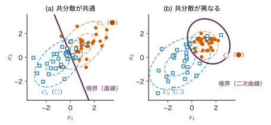
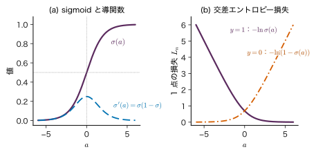
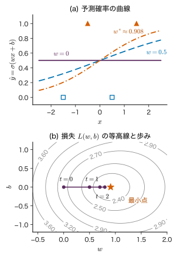
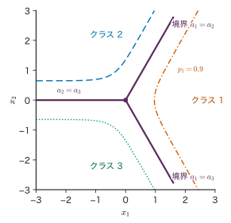
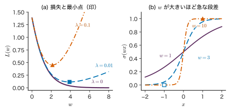
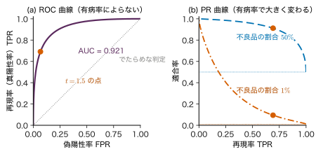
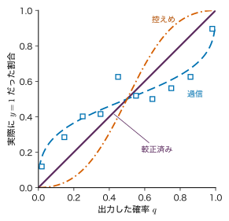

第9章線形識別モデル — 決定境界と確率
- 2 つの記述子（たとえば焼成温度と添加量）で表した試料が，目的の相になるか，ならないか．その境目の線をデータからどう引けばよいか．
- 分類のモデルが「この試料が目的の相になる確率は 0.93」と答えた．この確率はどこから出てきて，どこまで信じてよいか．
- 不良品が 1% しかない工程で「正解率 99%」の判定器を作った．これは良い判定器か．
焼結の条件を 2 つの記述子で表し，焼いた試料が単相になったものを ●，異相が出たものを ■ として平面に打つと，● と ■ はおおむね別の側に集まるが，境目のあたりでは混じり合う．この境目に 1 本の直線を引き，「直線のこちら側なら単相」と予測するのが，本章の線形識別である．ただし，境目のすぐ近くの試料と遠く離れた試料とでは，予測の確かさが違うはずである．そこで直線からの距離を確率に直す関数（sigmoid）をかぶせ，「単相になる確率」を出すモデルを作る．これがロジスティック回帰である．
本章では，まず判別関数と決定境界（超平面）の幾何を押さえ（9.1 節），クラスごとのデータの分布から Bayes の定理で確率を作る生成的な方法（9.2 節）と，確率そのものを直接モデル化する識別的な方法（9.3〜9.4 節）を比べる．後者の損失は第5章の交差エントロピーであり，その勾配が「予測 − 正解」という簡単な形になることを 1 行ずつ導く．3 クラス以上へは softmax で広げる（9.5 節）．後半では，データが直線できれいに分かれると最尤推定の重みが無限大へ逃げること（9.6 節），分類器の評価（混同行列，適合率・再現率，ROC 曲線と PR 曲線）と不均衡なデータ（9.7 節），出力確率の較正（9.8 節）を扱い，ペロブスカイトの許容因子と製品の良否判定に結びつける（9.9 節）．
- 線形の判別関数 $f(\bm{x})=\bm{w}^{\tp}\bm{x}+b$ の決定境界が超平面であり，$\bm{w}$ がその法線であることを示し，点から境界までの符号付き距離 $f(\bm{x})/\norm{\bm{w}}$ を導ける．
- クラスごとの Gauss 分布の共分散が共通なら，事後確率が $\sigma(\bm{w}^{\tp}\bm{x}+b)$ の形になることを導ける．
- sigmoid の性質を示し，Bernoulli 分布の尤度から交差エントロピー損失とその勾配 $\sum_n(\hat{y}_n-y_n)\bm{\phi}_n$，Hesse 行列を導いて凸性を説明できる．
- 小さなデータでロジスティック回帰の勾配降下法を手で 1〜2 ステップ進められる．
- softmax と多クラスの交差エントロピーの勾配が $\hat{\bm{y}}-\bm{y}$ になることを導き，log-sum-exp で安定に計算できる．
- 線形分離できるデータで最尤解が発散する理由と，正則化がそれを止める理由を説明できる．
- 混同行列から正解率・適合率・再現率・F1 を計算し，不均衡なデータで正解率が当てにならない理由と，誤りの費用に応じたしきい値の決め方を説明できる．
入門ルートで読む節：9.1，9.3，9.4，9.5，9.11．「詳しいルート」の印が付いた節は，初めて読むときは飛ばしてよい．
9.1 判別関数と決定境界 — 直線で分ける
9.1.1 何をしたいのか
分類（classification）は，入力 $\bm{x}$ からクラスを予測する仕事である（第1章 1.2）．本章では，まず 2 クラスの場合を考える．クラスのラベルを $y\in\{0,1\}$ とし，$y=1$ を「目的の相になる（単相）」，$y=0$ を「ならない（異相が出る）」のように読む．入力は $D$ 個の記述子を並べた列ベクトル $\bm{x}=(x_1,\dots,x_D)^{\tp}\in\R^{D}$ である．
最も簡単な分類の規則は，入力の 1 次式の符号で決めることである．
定義9.1 線形の判別関数と決定境界
重み $\bm{w}\in\R^{D}$（列ベクトル）とバイアス $b\in\R$ を使って
\begin{equation} f(\bm{x})=\bm{w}^{\tp}\bm{x}+b \label{eq:9-disc} \end{equation}（$\bm{w}^{\tp}\bm{x}=\sum_{i=1}^{D}w_ix_i$）を線形の判別関数（linear discriminant function）という．$f(\bm{x})\ge0$ ならクラス 1，$f(\bm{x})\lt0$ ならクラス 0 と予測する．入力空間の中で $f(\bm{x})=0$ となる点の集合
$$ \mathcal{B}=\{\bm{x}\in\R^{D}\mid \bm{w}^{\tp}\bm{x}+b=0\} $$を決定境界（decision boundary）という．$f$ の値は記述子と同じ単位をもつとは限らない（重みが単位を吸収する）．以下，記述子は標準化した無次元の値とする（第7章 7.3）．
$D=2$ なら決定境界は平面の中の直線 $w_1x_1+w_2x_2+b=0$，$D=3$ なら空間の中の平面である．一般の $D$ では $D-1$ 次元の平らな集合になり，これを超平面（hyperplane）と呼ぶ．
9.1.2 重みは境界の法線，判別関数は符号付き距離
判別関数の値には，幾何学的な意味がある（図9.1）．
導出：$\bm{w}$ は境界に直交し，符号付き距離は $f(\bm{x})/\norm{\bm{w}}$
(1) $\bm{w}$ は境界の法線である．境界の上の 2 点 $\bm{x}_A,\bm{x}_B$ をとると，$\bm{w}^{\tp}\bm{x}_A+b=0$ と $\bm{w}^{\tp}\bm{x}_B+b=0$ が成り立つ．引き算すると
$$ \bm{w}^{\tp}(\bm{x}_A-\bm{x}_B)=0 . $$$\bm{x}_A-\bm{x}_B$ は境界に沿った任意の向きなので，$\bm{w}$ は境界に沿ったどの向きとも直交する．
(2) 符号付き距離．任意の点 $\bm{x}$ を，境界の上の点 $\bm{x}_{\perp}$（$\bm{x}$ から下ろした垂線の足）と，法線方向の成分に分ける．法線の単位ベクトルは $\bm{w}/\norm{\bm{w}}$ なので，ある実数 $r$ を使って
$$ \bm{x}=\bm{x}_{\perp}+r\,\frac{\bm{w}}{\norm{\bm{w}}} $$と書ける．$r$ は $\bm{x}$ が $\bm{w}$ の向きの側にあれば正，反対側なら負の「符号付き距離」である．両辺に $\bm{w}^{\tp}$ を掛けて $b$ を足す．
$$ \begin{aligned} f(\bm{x})&=\bm{w}^{\tp}\bm{x}_{\perp}+b+r\,\frac{\bm{w}^{\tp}\bm{w}}{\norm{\bm{w}}}\\ &=0+r\,\frac{\norm{\bm{w}}^{2}}{\norm{\bm{w}}}=r\norm{\bm{w}} . \end{aligned} $$1 行目から 2 行目では，$\bm{x}_{\perp}$ が境界の上にあること（$\bm{w}^{\tp}\bm{x}_{\perp}+b=0$）と $\bm{w}^{\tp}\bm{w}=\norm{\bm{w}}^{2}$ を使った．したがって
\begin{equation} r=\frac{f(\bm{x})}{\norm{\bm{w}}} \label{eq:9-dist} \end{equation}である．とくに原点 $\bm{x}=\bm{0}$ では $f(\bm{0})=b$ なので，原点の符号付き距離は $b/\norm{\bm{w}}$ であり，$b$ は境界を原点からずらす量である．
（導出終わり）
式 \eqref{eq:9-dist} から，次の 2 つが分かる．
- $\bm{w}$ と $b$ を同じ正の数 $c$ で掛けても境界は変わらない．$cf(\bm{x})=0$ と $f(\bm{x})=0$ は同じ集合であり，符号付き距離 $cf/\norm{c\bm{w}}=f/\norm{\bm{w}}$ も変わらない．変わるのは $f$ の値の「目盛り」だけである．この自由度が 9.6 節の発散の原因になる．
- $\abs{f(\bm{x})}$ が大きい点ほど境界から遠い．境界から遠い点ほど分類に自信をもってよさそうである．9.3 節では，この $f$ を確率に変換する．
例題9.1 境界と符号付き距離
2 つの記述子 $(x_1,x_2)$ について，$\bm{w}=(2,1)^{\tp}$，$b=-2$ の判別関数を考える．(1) 決定境界の式を書け．(2) 点 $(2,1)$ と原点 $(0,0)$ はどちらのクラスに予測されるか．それぞれの符号付き距離を求めよ．(3) $\bm{w}$ と $b$ を 10 倍すると，(2) の答えはどう変わるか．
解答 (1) $2x_1+x_2-2=0$，すなわち $x_2=-2x_1+2$ の直線．
(2) $\norm{\bm{w}}=\sqrt{2^{2}+1^{2}}=\sqrt5\approx2.236$．点 $(2,1)$ では $f=2\times2+1\times1-2=3\gt0$ なのでクラス 1，符号付き距離は $3/\sqrt5\approx1.342$．原点では $f=b=-2\lt0$ なのでクラス 0，符号付き距離は $-2/\sqrt5\approx-0.894$．
(3) $f$ の値は $30$ と $-20$ に変わるが，$\norm{\bm{w}}$ も $10\sqrt5$ になるので符号付き距離は $1.342$ と $-0.894$ のまま，予測されるクラスも変わらない．
9.1.3 基底関数を使えば境界は曲がる
第8章の回帰と同じく，入力 $\bm{x}$ をそのまま使う代わりに，基底関数 $\bm{\phi}(\bm{x})=(\phi_1(\bm{x}),\dots,\phi_M(\bm{x}))^{\tp}\in\R^{M}$ で変換してから 1 次式を作ってもよい．
$$ f(\bm{x})=\bm{w}^{\tp}\bm{\phi}(\bm{x})+b,\qquad \bm{w}\in\R^{M}. $$たとえば $\bm{\phi}(\bm{x})=(x_1,x_2,x_1^{2},x_1x_2,x_2^{2})^{\tp}$ とすると，境界 $f=0$ は $\bm{x}$ の平面では楕円や双曲線になる．それでも $\bm{w}$ については 1 次式なので，学習の計算は「線形」のまま扱える．本章の式はすべて $\bm{\phi}_n\equiv\bm{\phi}(\bm{x}_n)$ で書き，$\bm{\phi}(\bm{x})=\bm{x}$ とすれば入力そのものを使う場合になる．どの基底を選ぶかは仮定の選択であり，基底を自動で選ぶ方法がカーネル法（第10章）とニューラルネットワーク（第14章）である．
判別関数の符号だけでは「どれくらい確かか」が分からない．境界のすぐ近くの点と遠く離れた点を同じ「クラス 1」と答えてしまう．確率を出す方法には 2 通りある．クラスごとのデータの分布を作って Bayes の定理で確率を計算する生成的な方法（9.2 節）と，確率そのものを入力の関数として直接モデル化する識別的な方法（9.3 節）である．入門ルートでは 9.2 節を飛ばして 9.3 節へ進んでよい．
9.2 生成的分類 — クラスごとの分布から事後確率へ詳しいルート
9.2.1 Bayes の定理で事後確率を作る
2 つのクラスを $C_1$（$y=1$）と $C_2$（$y=0$）と書く．各クラスの入力の分布 $p(\bm{x}\mid C_k)$（クラスの条件付き密度）と，クラスの割合 $p(C_k)$（事前確率）が分かっていれば，入力 $\bm{x}$ を見た後のクラスの確率は Bayes の定理（第2章 2.4）で計算できる．データがどう生成されるかを丸ごとモデル化するので，この方法を生成的分類（generative classification）という．
$$ p(C_1\mid\bm{x})=\frac{p(\bm{x}\mid C_1)p(C_1)}{p(\bm{x}\mid C_1)p(C_1)+p(\bm{x}\mid C_2)p(C_2)} . $$分子と分母を分子で割り，
\begin{equation} a(\bm{x})\equiv\ln\frac{p(\bm{x}\mid C_1)\,p(C_1)}{p(\bm{x}\mid C_2)\,p(C_2)} \label{eq:9-gen-a} \end{equation}とおくと，分母の第 2 項 / 分子 $=e^{-a}$ なので
\begin{equation} p(C_1\mid\bm{x})=\frac{1}{1+e^{-a}}=\sigma(a) \label{eq:9-gen-sig} \end{equation}となる．ここで $\sigma(a)=1/(1+e^{-a})$ は sigmoid 関数（ロジスティック関数）である（本章の $\sigma(\cdot)$ は必ず引数を付けて書き，標準偏差の $\sigma$ とは区別する）．$a$ は 2 つのクラスの事後確率の比の対数 $\ln\{p(C_1\mid\bm{x})/p(C_2\mid\bm{x})\}$ に等しく，対数オッズ（log-odds）またはロジット（logit）と呼ぶ．ここまでは分布の形を何も仮定していない．
9.2.2 共分散が共通な Gauss 分布なら境界は直線
各クラスの入力が，平均だけが違い共分散行列が共通な多変量 Gauss 分布（第3章 3.6）に従うと仮定する．
$$ \begin{aligned} p(\bm{x}\mid C_k)&=\Normal(\bm{x}\mid\bm{\mu}_k,\bm{\Sigma})\\ &=\frac{1}{(2\pi)^{D/2}\abs{\bm{\Sigma}}^{1/2}}\exp\!\left(-\tfrac12Q_k\right),\\ Q_k&=(\bm{x}-\bm{\mu}_k)^{\tp}\bm{\Sigma}^{-1}(\bm{x}-\bm{\mu}_k). \end{aligned} $$$\bm{\mu}_k\in\R^{D}$ はクラス $k$ の平均，$\bm{\Sigma}\in\R^{D\times D}$ は共通の共分散行列（対称・正定値），$\pi_k\equiv p(C_k)$ は事前確率である（$\pi_1+\pi_2=1$．本節の $\pi_k$ は円周率ではない）．
導出：対数オッズが $\bm{x}$ の 1 次式になる
式 \eqref{eq:9-gen-a} に代入する．正規化の係数 $(2\pi)^{-D/2}\abs{\bm{\Sigma}}^{-1/2}$ は 2 つのクラスで同じなので，比をとると消える．
$$ a=-\tfrac12Q_1+\tfrac12Q_2+\ln\frac{\pi_1}{\pi_2}. $$2 次形式 $Q_k$ を展開する．$\bm{\Sigma}^{-1}$ は対称なので $\bm{x}^{\tp}\bm{\Sigma}^{-1}\bm{\mu}_k=\bm{\mu}_k^{\tp}\bm{\Sigma}^{-1}\bm{x}$ であり，
$$ \begin{aligned} Q_k&=\bm{x}^{\tp}\bm{\Sigma}^{-1}\bm{x}-2\bm{\mu}_k^{\tp}\bm{\Sigma}^{-1}\bm{x}\\ &\quad+\bm{\mu}_k^{\tp}\bm{\Sigma}^{-1}\bm{\mu}_k . \end{aligned} $$これを $k=1,2$ について代入すると，2 次の項 $\bm{x}^{\tp}\bm{\Sigma}^{-1}\bm{x}$ は $-\tfrac12$ と $+\tfrac12$ の係数で現れて打ち消し合う．残るのは
$$ \begin{aligned} a&=\bm{\mu}_1^{\tp}\bm{\Sigma}^{-1}\bm{x}-\bm{\mu}_2^{\tp}\bm{\Sigma}^{-1}\bm{x}\\ &\quad-\tfrac12\bm{\mu}_1^{\tp}\bm{\Sigma}^{-1}\bm{\mu}_1+\tfrac12\bm{\mu}_2^{\tp}\bm{\Sigma}^{-1}\bm{\mu}_2+\ln\frac{\pi_1}{\pi_2} \end{aligned} $$である．1 行目を $\bigl\{\bm{\Sigma}^{-1}(\bm{\mu}_1-\bm{\mu}_2)\bigr\}^{\tp}\bm{x}$ とまとめると，$a=\bm{w}^{\tp}\bm{x}+b$ の形になる．
（導出終わり）
定理9.1 共分散が共通な Gauss 分布の事後確率
2 クラスのクラスの条件付き密度が $\Normal(\bm{x}\mid\bm{\mu}_k,\bm{\Sigma})$（$\bm{\Sigma}$ は共通）で，事前確率が $\pi_1,\pi_2$ なら，$p(C_1\mid\bm{x})=\sigma(\bm{w}^{\tp}\bm{x}+b)$ であり，
である．決定境界 $p(C_1\mid\bm{x})=0.5$ は $a=0$，すなわち超平面である．
$\bm{w}$ は平均の差 $\bm{\mu}_1-\bm{\mu}_2$ そのものではなく，それに $\bm{\Sigma}^{-1}$ を掛けたものである．ばらつきの大きい方向は割り引かれ，ばらつきの小さい方向が重視される．事前確率は $b$ にだけ入り，$\pi_1$ を小さくすると境界はクラス 1 の側へ平行移動する．
共分散がクラスごとに違う（$\bm{\Sigma}_1\ne\bm{\Sigma}_2$）と，上の導出で 2 次の項が打ち消し合わず，$a$ には $-\tfrac12\bm{x}^{\tp}(\bm{\Sigma}_1^{-1}-\bm{\Sigma}_2^{-1})\bm{x}$ と正規化の係数の比 $-\tfrac12\ln(\abs{\bm{\Sigma}_1}/\abs{\bm{\Sigma}_2})$ が残る．境界は 2 次曲線（2 次曲面）になる（図9.2(b)）．

9.2.3 パラメーターの最尤推定
実際には $\bm{\mu}_k$，$\bm{\Sigma}$，$\pi_k$ をデータから推定する．クラス $C_1$ のデータが $N_1$ 個，$C_2$ が $N_2$ 個（$N_1+N_2=N$）のとき，同時分布 $p(\bm{x},C_k)=\pi_k\Normal(\bm{x}\mid\bm{\mu}_k,\bm{\Sigma})$ の対数尤度を最大にすると（第4章 4.2 節の Gauss 分布の最尤推定と同じ手順で），
$$ \begin{gathered} \hat{\pi}_1=\frac{N_1}{N},\qquad \hat{\bm{\mu}}_k=\frac{1}{N_k}\sum_{n\in C_k}\bm{x}_n,\\ \hat{\bm{\Sigma}}=\frac{N_1}{N}\bm{S}_1+\frac{N_2}{N}\bm{S}_2 \end{gathered} $$が得られる．$\bm{S}_k=\frac{1}{N_k}\sum_{n\in C_k}(\bm{x}_n-\hat{\bm{\mu}}_k)(\bm{x}_n-\hat{\bm{\mu}}_k)^{\tp}$ はクラスごとの標本共分散行列で，共通の共分散は両者をデータ数の割合で重み付けた平均になる．計算はクラスごとの平均と共分散だけで済み，反復が要らない．この方法は線形判別分析（linear discriminant analysis，LDA）と呼ばれる．
例題9.2 1 次元の生成的分類
ある記述子 $x$（標準化した値）が，クラス 1 では $\Normal(x\mid2,1)$，クラス 0 では $\Normal(x\mid0,1)$ に従うとする．(1) $\pi_1=\pi_2=0.5$ のとき，$w$，$b$，境界の位置を求めよ．$x=1.5$ での $p(C_1\mid x)$ を求めよ．(2) クラス 1 が全体の 2 割（$\pi_1=0.2$）のときはどうなるか．
解答 1 次元では $\bm{\Sigma}^{-1}=1/\sigma^{2}=1$．(1) 式 \eqref{eq:9-gen-w} より $w=(2-0)/1=2$．式 \eqref{eq:9-gen-b} より $b=-\tfrac12\times2^{2}+\tfrac12\times0^{2}+\ln1=-2$．境界は $2x-2=0$ より $x=1$（2 つの平均のちょうど中点）．$x=1.5$ では $a=2\times1.5-2=1$，$p(C_1\mid x)=\sigma(1)=1/(1+e^{-1})\approx0.731$．
(2) $b=-2+\ln(0.2/0.8)$ $=-2-1.386=-3.386$．境界は $x=3.386/2\approx1.693$ へ移り，$x=1.5$ では $a=3-3.386=-0.386$，$p(C_1\mid x)=\sigma(-0.386)\approx0.405$ になる．同じ測定値でも，クラス 1 がまれなら「クラス 1 である確率」は下がる（第2章 2.4 節の欠陥検査の例と同じ理由）．
生成的と識別的：数えるパラメーターの数
生成的分類は $p(\bm{x}\mid C_k)$ を通して入力の分布全体をモデル化する．$D$ 次元で共分散を共通にすると，平均 $2D$ 個，共分散 $D(D+1)/2$ 個，事前確率 1 個のパラメーターが要る（$D=10$ で 76 個）．ところが分類に使うのは結局 $\bm{w}$ と $b$ の $D+1$ 個（$D=10$ で 11 個）だけである．識別的な方法（9.3 節）はこの $D+1$ 個を直接決める．Gauss 分布の仮定が正しければ生成的な方法は少ないデータで効率よく推定できるが，仮定が外れていると（たとえば裾の重い分布や外れ値があると），その誤りが $\bm{w}$ に持ち込まれる．逆に，生成的なモデルは入力の分布 $p(\bm{x})$ も与えるので，「訓練データから離れた入力」を見つけるのにも使える．
9.3 識別的分類 — ロジスティック回帰
9.3.1 モデル：対数オッズを 1 次式で表す
識別的分類（discriminative classification）では，入力の分布には触れず，入力を与えたときのクラスの確率 $p(y=1\mid\bm{x})$ を直接モデル化する．確率は 0 と 1 の間にあるので，1 次式 $\bm{w}^{\tp}\bm{\phi}(\bm{x})+b$（値は $-\infty$ から $\infty$）をそのまま確率にはできない．そこで，確率 $p$ を対数オッズ $\ln\{p/(1-p)\}$（$-\infty$ から $\infty$ の値をとる）に直したものを 1 次式で表す．
$$ \ln\frac{p(y=1\mid\bm{x})}{1-p(y=1\mid\bm{x})}=\bm{w}^{\tp}\bm{\phi}(\bm{x})+b\equiv a(\bm{x}). $$これを $p$ について解くと，$p/(1-p)=e^{a}$ より $p=e^{a}(1-p)$，$p(1+e^{a})=e^{a}$，$p=e^{a}/(1+e^{a})=1/(1+e^{-a})$ となる．
定義9.2 ロジスティック回帰
入力 $\bm{x}$，基底関数 $\bm{\phi}(\bm{x})\in\R^{M}$，重み $\bm{w}\in\R^{M}$，バイアス $b\in\R$ について，
\begin{equation} \begin{aligned} \hat{y}(\bm{x})&=p(y=1\mid\bm{x};\bm{w},b)\\ &=\sigma(a),\\ a&=\bm{w}^{\tp}\bm{\phi}(\bm{x})+b \end{aligned} \label{eq:9-logistic} \end{equation}（$\sigma(a)=1/(1+e^{-a})$）とするモデルをロジスティック回帰（logistic regression）という．$p(y=0\mid\bm{x})=1-\hat{y}$ である．予測のクラスは $\hat{y}\ge0.5$（$a\ge0$）なら 1 とするのが基本だが，しきい値は目的に応じて変える（9.7 節，9.9 節）．
名前に「回帰」が付くのは，確率（連続値）を入力の関数として当てはめるからであり，仕事としては分類である．決定境界 $\hat{y}=0.5$ は $a=0$ なので，9.1 節の線形の判別関数の境界と同じ形の超平面である．違いは，境界から離れるにつれて確率がなめらかに 0 か 1 に近づくことにある．式 \eqref{eq:9-dist} より，$a=\norm{\bm{w}}\times(\text{符号付き距離})$ なので，$\norm{\bm{w}}$ が大きいほど境界の近くで確率が急に変わる．
この形は天下り的に見えるが，9.2 節で示したように，クラスごとの入力が共分散の共通な Gauss 分布に従うときの事後確率はちょうどこの形になる（定理9.1）．Gauss 分布に限らず，クラスの条件付き密度が指数型分布族（第3章 3.11）の同じ族で，ある種の条件を満たすときにも同じ形が出る．ロジスティック回帰は，こうした分布の詳細を仮定せずに，「対数オッズが特徴の 1 次式である」という点だけを仮定するモデルである．
9.3.2 sigmoid 関数の性質
定理9.2 sigmoid の対称性と導関数
$\sigma(a)=1/(1+e^{-a})$ について，次が成り立つ．
\begin{equation} \sigma(-a)=1-\sigma(a) \label{eq:9-sig-sym} \end{equation} \begin{equation} \sigma'(a)=\sigma(a)\bigl(1-\sigma(a)\bigr) \label{eq:9-sig-deriv} \end{equation}また $0\lt\sigma(a)\lt1$，$\sigma(0)=1/2$，$\sigma$ は単調増加で，逆関数は $a=\ln\{\sigma/(1-\sigma)\}$ であり，これをロジット（logit）と呼ぶ．
証明
(1) 対称性：$\sigma(-a)=\dfrac{1}{1+e^{a}}$．分子と分母に $e^{-a}$ を掛けて $\dfrac{e^{-a}}{e^{-a}+1}$．一方，$1-\sigma(a)=\dfrac{(1+e^{-a})-1}{1+e^{-a}}=\dfrac{e^{-a}}{1+e^{-a}}$．両者は等しい．
(2) 導関数：$\sigma(a)=(1+e^{-a})^{-1}$ を合成関数として微分する．
$$ \begin{aligned} \sigma'(a)&=-(1+e^{-a})^{-2}\times(-e^{-a})\\ &=\frac{e^{-a}}{(1+e^{-a})^{2}}=\frac{1}{1+e^{-a}}\times\frac{e^{-a}}{1+e^{-a}}\\ &=\sigma(a)\bigl(1-\sigma(a)\bigr). \end{aligned} $$最後の等号では，(1) で求めた $e^{-a}/(1+e^{-a})=1-\sigma(a)$ を使った．$\sigma'(a)\gt0$ なので単調増加である．
（証明終わり）
式 \eqref{eq:9-sig-deriv} から，$\sigma'$ は $a=0$ で最大値 $1/4$ をとり，$\abs{a}$ が大きくなると 0 に近づく（図9.3(a)）．この「最大でも $1/4$」は，学習率の目安（9.3.5 項）に使う．

9.3.3 Bernoulli 尤度から交差エントロピー損失へ
訓練データ $\data=\{(\bm{x}_n,y_n)\}_{n=1}^{N}$，$y_n\in\{0,1\}$ が与えられたとする．$\bm{\phi}_n\equiv\bm{\phi}(\bm{x}_n)\in\R^{M}$，$a_n\equiv\bm{w}^{\tp}\bm{\phi}_n+b$，$\hat{y}_n\equiv\sigma(a_n)$ と書く．入力 $\bm{x}_n$ を与えたときのラベル $y_n$ は，成功確率 $\hat{y}_n$ の Bernoulli 分布（第3章 3.2）に従うとモデル化する．
$$ p(y_n\mid\bm{x}_n;\bm{w},b)=\hat{y}_n^{\,y_n}(1-\hat{y}_n)^{1-y_n}. $$$y_n=1$ なら右辺は $\hat{y}_n$，$y_n=0$ なら $1-\hat{y}_n$ になる．入力を与えたもとで各データのラベルが独立だとすると，尤度は積
$$ p(\bm{y}\mid\bm{X};\bm{w},b)=\prod_{n=1}^{N}\hat{y}_n^{\,y_n}(1-\hat{y}_n)^{1-y_n} $$である（$\bm{y}=(y_1,\dots,y_N)^{\tp}$，$\bm{X}$ は入力をまとめたもの）．最尤推定（第4章 4.2）は，この対数をとって符号を反転したものを最小にすることと同じである．
定義9.3 交差エントロピー損失（2 クラス）
\begin{equation} L(\bm{w},b)=\sum_{n=1}^{N}L_n \label{eq:9-ce} \end{equation} $$ \begin{aligned} L_n&=-y_n\ln\hat{y}_n\\ &\quad-(1-y_n)\ln(1-\hat{y}_n) \end{aligned} $$$L_n$ は 1 点ぶんの損失である．これは第5章 5.5 節の交差エントロピー損失と同じものである．
記号：損失は和で書く
本章と第8章では，損失をデータについての和で書く．第7章では平均（$\frac1N\sum_n$），第14・15章のニューラルネットワークでも平均を使う．和と平均の違いは定数倍 $N$ だけなので最小点は変わらないが，勾配が $N$ 倍違うので，同じ学習率 $\eta$ でも 1 歩の大きさが変わる．正則化係数 $\lambda$ の値の意味も $N$ 倍ずれる．
損失の形は図9.3(b) のとおりである．正解 $y_n=1$ で $\hat{y}_n\to1$（$a_n\to\infty$）なら $L_n\to0$，$\hat{y}_n\to0$ なら $L_n\to\infty$ である．「確信をもって間違えた」予測を強く罰する性質は第5章で見た．$a$ の関数として書き直すと見通しがよい．定理9.2 を使うと $\ln\hat{y}=-\ln(1+e^{-a})$，$\ln(1-\hat{y})=\ln\sigma(-a)=-\ln(1+e^{a})$ なので
\begin{equation} \begin{aligned} L_n&=y_n\ln(1+e^{-a_n})\\ &\quad+(1-y_n)\ln(1+e^{a_n})\\ &=\ln(1+e^{a_n})-y_na_n \end{aligned} \label{eq:9-ce-a} \end{equation}となる（最後の等号は $\ln(1+e^{-a})=\ln(1+e^{a})-a$ を使った）．$\ln(1+e^{a})$ は $a\to-\infty$ で 0，$a\to\infty$ で $a$ に近づく．数値計算では $\hat{y}$ を経由せずにこの形で計算し，$a\gt0$ では $\ln(1+e^{a})=a+\ln(1+e^{-a})$ と書き換えて $e^{a}$ の桁あふれを避ける．
例題9.3 1 点の損失と，その勾配の符号
ある試料で $a=2$ となった．(1) $\hat{y}$ を求めよ．(2) 正解が $y=1$ のときと $y=0$ のときの損失 $L_n$ を求めよ．(3) $\partial L_n/\partial a$ をそれぞれ求め，勾配降下法で $a$ がどちらへ動くかを述べよ（9.3.4 項の結果 $\partial L_n/\partial a_n=\hat{y}_n-y_n$ を使ってよい）．
解答 (1) $\hat{y}=\sigma(2)=1/(1+e^{-2})$ $=1/1.1353\approx0.881$．
(2) $y=1$：$L_n=-\ln0.881$ $=\ln(1+e^{-2})\approx0.127$．$y=0$：$L_n=-\ln(1-0.881)$ $=\ln(1+e^{2})\approx2.127$．式 \eqref{eq:9-ce-a} でも $\ln(1+e^{2})-1\times2=2.127-2=0.127$ と一致する．
(3) $y=1$ では $\hat{y}-y=0.881-1=-0.119$．勾配が負なので，$a$ を増やす向き（より確信を強める向き）に少しだけ動く．$y=0$ では $0.881-0=0.881$ で，$a$ を減らす向きに大きく動く．誤りの大きさに比例した力で引き戻される．
9.3.4 勾配の導出
損失を最小にする $(\bm{w},b)$ を求めるため，勾配を計算する．連鎖律（大学数学 第6章 6.4）を，$L_n\to a_n\to(\bm{w},b)$ の順に使う．
導出：$\partial L/\partial\bm{w}=\sum_n(\hat{y}_n-y_n)\bm{\phi}_n$
(1) $a_n$ についての微分．式 \eqref{eq:9-ce-a} の $L_n=\ln(1+e^{a_n})-y_na_n$ を $a_n$ で微分する．
$$ \pdiff{L_n}{a_n}=\frac{e^{a_n}}{1+e^{a_n}}-y_n . $$第 1 項の分子と分母を $e^{a_n}$ で割ると $1/(e^{-a_n}+1)=\sigma(a_n)=\hat{y}_n$ である．よって
\begin{equation} \pdiff{L_n}{a_n}=\hat{y}_n-y_n \label{eq:9-dLda} \end{equation}（定義の形 $-\{y\ln\sigma+(1-y)\ln(1-\sigma)\}$ から定理9.2 を使っても，$-y(1-\sigma)+(1-y)\sigma=\sigma-y$ と同じ結果になる．）
(2) $\bm{w}$ と $b$ についての微分．$a_n=\sum_{j=1}^{M}w_j\phi_j(\bm{x}_n)+b$ なので，$\partial a_n/\partial w_j=\phi_j(\bm{x}_n)$，$\partial a_n/\partial b=1$．連鎖律より
$$ \begin{aligned} \pdiff{L_n}{w_j}&=\pdiff{L_n}{a_n}\pdiff{a_n}{w_j}=(\hat{y}_n-y_n)\,\phi_j(\bm{x}_n),\\ \pdiff{L_n}{b}&=\hat{y}_n-y_n . \end{aligned} $$(3) 和をとってベクトルにまとめる．$L=\sum_nL_n$ なので，各成分について $n$ の和をとり，$j=1,\dots,M$ の成分を縦に並べればよい．
（導出終わり）
以上をまとめると，
\begin{equation} \begin{aligned} \nabla_{\bm{w}}L&=\sum_{n=1}^{N}(\hat{y}_n-y_n)\,\bm{\phi}_n,\\ \pdiff{L}{b}&=\sum_{n=1}^{N}(\hat{y}_n-y_n) \end{aligned} \label{eq:9-grad} \end{equation}を得る．計画行列 $\bm{\Phi}\in\R^{N\times M}$（第 $n$ 行が $\bm{\phi}_n^{\tp}$）と $\hat{\bm{y}}=(\hat{y}_1,\dots,\hat{y}_N)^{\tp}$ を使えば $\nabla_{\bm{w}}L=\bm{\Phi}^{\tp}(\hat{\bm{y}}-\bm{y})$ と書ける．
この形は，第8章の最小二乗法の勾配 $-\bm{\Phi}^{\tp}(\bm{y}-\bm{\Phi}\bm{w})=\bm{\Phi}^{\tp}(\hat{\bm{y}}-\bm{y})$ とまったく同じである（回帰では $\hat{\bm{y}}=\bm{\Phi}\bm{w}$）．各データの「予測 − 正解」を，そのデータの特徴ベクトルで重み付けて足し合わせる．sigmoid の微分 $\hat{y}(1-\hat{y})$ が交差エントロピーの対数の微分 $1/\hat{y}$，$1/(1-\hat{y})$ とちょうど打ち消し合ったために，この簡単な形になった．二乗誤差 $\tfrac12(\hat{y}-y)^{2}$ を sigmoid と組み合わせると，勾配は $(\hat{y}-y)\hat{y}(1-\hat{y})\bm{\phi}$ となり，$\hat{y}$ が 0 か 1 に張り付いた（確信をもって間違えた）点では $\hat{y}(1-\hat{y})\approx0$ のため勾配がほとんど消えてしまう．これが分類に交差エントロピーを使うもう 1 つの理由である（第5章 5.5 節で予告した点）．
勾配を 0 とおいた式 $\sum_n(\sigma(a_n)-y_n)\bm{\phi}_n=\bm{0}$ は，$\bm{w}$ について非線形であり，最小二乗法の正規方程式のように式で解くことはできない．そこで勾配降下法（第7章 7.2）
\begin{equation} \begin{aligned} \bm{w}&\leftarrow\bm{w}-\eta\nabla_{\bm{w}}L,\\ b&\leftarrow b-\eta\pdiff{L}{b} \end{aligned} \label{eq:9-gd} \end{equation}や Newton 法（第7章 7.9）で数値的に解く．なお，$\partial L/\partial b=0$ からは，最小点で $\sum_n\hat{y}_n=\sum_ny_n$，つまり予測確率の合計が，訓練データの $y=1$ の個数に一致することが分かる．
9.3.5 Hesse 行列と凸性
勾配降下法でたどり着いた点が大域的な最小点であることを保証するのが凸性である（第7章 7.4）．バイアスを特徴に含めた $\tilde{\bm{\phi}}_n=(\bm{\phi}_n^{\tp},1)^{\tp}\in\R^{M+1}$，$\tilde{\bm{w}}=(\bm{w}^{\tp},b)^{\tp}$ を使うと $a_n=\tilde{\bm{w}}^{\tp}\tilde{\bm{\phi}}_n$，勾配は $\sum_n(\hat{y}_n-y_n)\tilde{\bm{\phi}}_n$ である．これをもう一度 $\tilde{\bm{w}}$ で微分する．$y_n$ は定数，$\hat{y}_n=\sigma(a_n)$ の微分は式 \eqref{eq:9-sig-deriv} と連鎖律から $\partial\hat{y}_n/\partial\tilde{\bm{w}}=\hat{y}_n(1-\hat{y}_n)\tilde{\bm{\phi}}_n$ なので，
\begin{equation} \begin{aligned} \bm{H}&=\frac{\partial^{2}L}{\partial\tilde{\bm{w}}\,\partial\tilde{\bm{w}}^{\tp}}\\ &=\sum_{n=1}^{N}\hat{y}_n(1-\hat{y}_n)\,\tilde{\bm{\phi}}_n\tilde{\bm{\phi}}_n^{\tp} \end{aligned} \label{eq:9-hess} \end{equation}となる（$\bm{H}\in\R^{(M+1)\times(M+1)}$）．任意のベクトル $\bm{v}\in\R^{M+1}$ について
$$ \bm{v}^{\tp}\bm{H}\bm{v}=\sum_{n=1}^{N}\hat{y}_n(1-\hat{y}_n)\,(\bm{v}^{\tp}\tilde{\bm{\phi}}_n)^{2}\ge0 $$である．$0\lt\hat{y}_n\lt1$ より各項の係数は正，$(\bm{v}^{\tp}\tilde{\bm{\phi}}_n)^{2}\ge0$ だからである．Hesse 行列がどこでも半正定値なので，交差エントロピー損失は $(\bm{w},b)$ について凸であり，局所的な最小点はすべて大域的な最小点である．ニューラルネットワーク（第14章）と違い，初期値によって別の解に落ちることはない．
係数 $\hat{y}_n(1-\hat{y}_n)$ は 1/4 以下なので，$\bm{H}\preceq\tfrac14\sum_n\tilde{\bm{\phi}}_n\tilde{\bm{\phi}}_n^{\tp}$（右辺から左辺を引いた行列が半正定値）である．第7章 7.2 節の議論から，学習率を
$$ \eta\lt\frac{2}{L_{\mathrm c}},\qquad L_{\mathrm c}=\tfrac14\lambda_{\max}\Bigl(\sum_n\tilde{\bm{\phi}}_n\tilde{\bm{\phi}}_n^{\tp}\Bigr) $$にとれば損失は毎回減る（$\lambda_{\max}$ は最大固有値．正則化項 $\tfrac{\lambda}{2}\norm{\bm{w}}^{2}$ を足すときは $L_{\mathrm c}$ に $\lambda$ を足す）．これは十分条件であり，目安を少し超えても収束することはある．損失を和で書いているので，$L_{\mathrm c}$ はデータ数 $N$ にほぼ比例して大きくなり，安定な $\eta$ は $1/N$ 程度に小さくなる．
Newton 法では $\tilde{\bm{w}}\leftarrow\tilde{\bm{w}}-\bm{H}^{-1}\nabla L$ と更新する（実際には連立方程式 $\bm{H}\bm{d}=\nabla L$ を Cholesky 分解で解く）．$\bm{H}$ が $\hat{y}_n(1-\hat{y}_n)$ を重みとする重み付き最小二乗の行列になっているので，この方法は反復重み付き最小二乗法（iteratively reweighted least squares，IRLS）とも呼ばれる．
9.3.6 正則化
回帰と同じく，重みの 2 乗の罰則を足して
\begin{equation} L_{\lambda}(\bm{w},b)=L(\bm{w},b)+\tfrac{\lambda}{2}\norm{\bm{w}}^{2} \label{eq:9-reg} \end{equation}を最小にすることが多い．$L(\bm{w},b)$ は式 \eqref{eq:9-ce} の交差エントロピーである．勾配には $\lambda\bm{w}$ が，Hesse 行列には $\lambda$ が（$\bm{w}$ の成分の対角に）足される．バイアス $b$ には罰則をかけないのが実務の習慣である．$b$ は「クラスの割合」や「記述子の原点の位置」を表すだけで，過学習の原因になる複雑さとは関係しないからである．この罰則は，重みに事前分布 $\Normal(\bm{w}\mid\bm{0},\sigma_w^{2}\bm{I})$ を置いた MAP 推定と同じであり，$\lambda=1/\sigma_w^{2}$ が対応する（回帰の $\lambda=\sigma^{2}/\sigma_w^{2}$ と違い，Bernoulli 尤度にはノイズの分散 $\sigma^{2}$ が無い）．$\lambda$ が特に重要になるのは 9.6 節の場合である．
9.4 手計算 — 4 点のロジスティック回帰を 1 ステップ進める
式 \eqref{eq:9-grad} と \eqref{eq:9-gd} を，手で追える大きさのデータで確かめる．
例題9.4 1 次元・4 点のロジスティック回帰
焼成温度を標準化した 1 つの記述子 $x$ と，単相になったか（$y=1$）否か（$y=0$）を記録した 4 個の試料がある（教育用の数値例）．
| $n$ | 1 | 2 | 3 | 4 |
|---|---|---|---|---|
| $x_n$ | $-1.5$ | $-0.5$ | $0.5$ | $1.5$ |
| $y_n$ | 0 | 1 | 0 | 1 |
モデルは $\hat{y}=\sigma(wx+b)$（$\phi(x)=x$，$M=1$），損失は式 \eqref{eq:9-ce}（正則化なし）とする．$w=0$，$b=0$ から学習率 $\eta=0.5$ の勾配降下法を始める．(1) 初めの損失 $L$ を求めよ．(2) 勾配を求め，1 ステップ後の $(w,b)$ を求めよ．(3) 1 ステップ後の各点の $\hat{y}_n$ と損失を求め，損失が減ったことを確かめよ．(4) 2 ステップ目の後の $w$ を求めよ．
解答 (1) $w=b=0$ ではすべての点で $a_n=0$，$\hat{y}_n=\sigma(0)=0.5$．各点の損失は $y_n$ によらず $-\ln0.5=\ln2$ なので，$L=4\ln2\approx2.7726$．
(2) 各点の残差 $\hat{y}_n-y_n$ は $(0.5,\ -0.5,\ 0.5,\ -0.5)$．式 \eqref{eq:9-grad} より
$$ \begin{aligned} \pdiff{L}{w}&=0.5\times(-1.5)+(-0.5)\times(-0.5)\\ &\quad+0.5\times0.5+(-0.5)\times1.5\\ &=-0.75+0.25+0.25-0.75=-1.0, \end{aligned} $$ $$ \pdiff{L}{b}=0.5-0.5+0.5-0.5=0 . $$更新 \eqref{eq:9-gd} より $w\leftarrow0-0.5\times(-1.0)=0.5$，$b\leftarrow0-0.5\times0=0$．
(3) $a_n=0.5x_n=(-0.75,\ -0.25,\ 0.25,\ 0.75)$，$\hat{y}_n=\sigma(a_n)=(0.321,\ 0.438,\ 0.562,\ 0.679)$．各点の損失は $y_n=0$ なら $-\ln(1-\hat{y}_n)$，$y_n=1$ なら $-\ln\hat{y}_n$ で，
$$ \begin{aligned} L&=-\ln0.679-\ln0.438-\ln0.438-\ln0.679\\ &=0.387+0.826+0.826+0.387\approx2.4256 . \end{aligned} $$（点 2 と点 3 はどちらも「正解に 0.438 を付けた」ので損失が等しい．）$2.7726$ から $2.4256$ に減った．
(4) 新しい残差は $(0.321,\ -0.562,\ 0.562,\ -0.321)$．
$$ \begin{aligned} \pdiff{L}{w}&=0.321\times(-1.5)\\ &\quad+(-0.562)\times(-0.5)\\ &\quad+0.562\times0.5\\ &\quad+(-0.321)\times1.5\\ &=-0.481+0.281\\ &\quad+0.281-0.481\approx-0.400, \end{aligned} $$$\partial L/\partial b=0.321-0.562$ $+0.562-0.321=0$．$w\leftarrow0.5-0.5\times(-0.400)=0.700$，損失は $2.3669$ になる．
この例ではデータが $x=0$ について対称で，クラスの数も同じなので，$\partial L/\partial b$ はいつも 0 になり $b=0$ のまま進む．$w$ は $0\to0.5\to0.700\to0.796\to\cdots$ と増え，最小点 $w^{*}\approx0.908$（$L^{*}\approx2.3475$）に近づく（図9.4）．最小点の $w^{*}$ が有限なのは，点 2（$x=-0.5$，$y=1$）と点 3（$x=0.5$，$y=0$）が「逆の側」にあり，直線では完全には分けられないからである．$w$ を大きくしすぎると，この 2 点の損失が増えてしまう．完全に分けられるデータで何が起こるかは 9.6 節で見る．
学習率の目安も確かめておく．$\sum_n\tilde{\bm{\phi}}_n\tilde{\bm{\phi}}_n^{\tp}=\begin{pmatrix}\sum x_n^{2}&\sum x_n\\ \sum x_n&4\end{pmatrix}=\begin{pmatrix}5&0\\0&4\end{pmatrix}$ の最大固有値は 5 なので，$L_{\mathrm c}=5/4=1.25$，$2/L_{\mathrm c}=1.6$ である．$\eta=0.5$ はこれより十分小さい．

シミュレーター9.1 ロジスティック回帰を勾配降下法で学習する
2 つの記述子で表した 60 点（教育用の合成データ）にロジスティック回帰を当てはめ，1 ステップずつ損失・重み・予測確率がどう変わるかを，式 \eqref{eq:9-grad}，\eqref{eq:9-gd} の数値で追う装置である．装置は入力を最初から標準化した値として作り，全データの勾配で更新し（ミニバッチなし），$b$ には罰則をかけず，訓練データの正解率だけを表示する．損失は本文と同じく和で，データは 60 点なので，安定な学習率は例題9.4 よりずっと小さい．
操作と観察
- 開いた直後の既定（データの型「重なりあり」，$N=60$，seed 20261112，特徴「1 次」，$\lambda=0.01$，$\eta=0.01$）の読み出しを見る → 反復 $t=0$ で損失 $L=41.5888$（$=60\ln2$），勾配の大きさ $\lVert\nabla L\rVert=25.7$．例題9.4 (1) と同じ理由で，全点で $\hat{y}=0.5$ である．
- 「1 ステップ」を 1 回押す → 重み（$x_1$ の係数）が 0.1971，（$x_2$ の係数）が 0.1654 になり，$b$ は 0 のまま，損失は 35.6318 に下がる．画面には勾配の大きさだけが出るが，$t=0$ の勾配の成分は $(-19.71,\ -16.54)$ であり，式 \eqref{eq:9-gd} の $\bm{w}\leftarrow\bm{0}-0.01\times(-19.71,\ -16.54)^{\tp}$ と一致する．$b$ が動かないのは，$y=1$ と $y=0$ が 30 点ずつで $\partial L/\partial b=\sum_n(0.5-y_n)=0$ だからである．
- 「1000 ステップ進める」を押す → 損失が 19.0939 になり，読み出しの「最小値 $L^{*}$（Newton 法）」19.0939 と一致する（$L-L^{*}$ がほぼ 0）．重みは $(2.514,\ 1.316)$，$b=-0.484$，訓練の正解率は 86.7 %（52/60）．
- 「調べる点」を $x_1=1$，$x_2=0.5$ にして「いまの数値を式に入れると」を見る → $a=2.514\times1.00$ $+1.316\times0.50$ $+(-0.484)=2.6879$，$\hat{y}=\sigma(a)=0.9363$，境界までの符号付き距離 $a/\lVert\bm{w}\rVert=0.947$．式 \eqref{eq:9-logistic} と \eqref{eq:9-dist} を数値で確かめる．
- 「やり直す」を押してから学習率 $\eta$ のスライダーを 0.32 にして「1000 ステップ進める」を押す → 読み出しの「学習率の安定の目安 $2/L_{\mathrm c}$」は 0.0966 である．損失は 22.64 と 22.94 を 1 反復ごとに行き来し，最小値 19.09 に届かない（9.3.5 項の目安を大きく超えたため）．
操作後の問い
- 手順 1 の損失 41.5888 を，データ数 $N$ だけを使って説明せよ．データ数を 100 にすると $t=0$ の損失はいくつか．
答えの例
$\bm{w}=\bm{0}$，$b=0$ ではどの点でも $\hat{y}=0.5$ なので，1 点の損失は $-\ln0.5=\ln2\approx0.6931$，和は $N\ln2$ である．$N=60$ で $41.589$，$N=100$ なら $100\ln2\approx69.31$ になる（正則化項は $\bm{w}=\bm{0}$ なので 0）．
- 手順 3 の最小点で，予測確率の合計 $\sum_n\hat{y}_n$ はいくつになるはずか．
答えの例
$b$ には罰則が無いので，最小点では $\partial L/\partial b=\sum_n(\hat{y}_n-y_n)=0$ が成り立つ．よって $\sum_n\hat{y}_n=\sum_ny_n=30$（$y=1$ の点の数）である．正則化 $\lambda$ は $\bm{w}$ にだけ掛かるので，この関係は $\lambda$ によらない．
- 手順 5 で，データ数を 2 倍の 120 にすると安定の目安 $2/L_{\mathrm c}$ はおよそどう変わるか．
答えの例
損失を和で書いているので，$\sum_n\tilde{\bm{\phi}}_n\tilde{\bm{\phi}}_n^{\tp}$ の最大固有値はデータ数にほぼ比例して増える．$L_{\mathrm c}$ がおよそ 2 倍以上になり，目安はおよそ半分かそれ以下になる（既定の seed で $N=120$ にすると，点の配置も変わるので 0.0385 になる）．平均の損失で書けば，目安はデータ数にほとんどよらない．
9.5 多クラス分類 — softmax と交差エントロピー
9.5.1 softmax 関数
相が 3 つ以上ある（たとえば「単相」「異相 A」「異相 B」）ときは，$K$ クラスの分類になる．ラベルは one-hot ベクトル $\bm{y}\in\{0,1\}^{K}$（正解のクラスの成分だけが 1．第3章 3.3）で表し，クラス番号を $k=1,\dots,K$ と書く．2 クラスでは 1 つの 1 次式 $a$ を sigmoid に通したが，$K$ クラスではクラスごとに 1 次式を作る．
$$ \begin{gathered} a_k=\bm{w}_k^{\tp}\bm{\phi}(\bm{x})+b_k\quad(k=1,\dots,K),\\ \bm{a}=\bm{W}\bm{\phi}(\bm{x})+\bm{b}\in\R^{K}. \end{gathered} $$$\bm{W}\in\R^{K\times M}$ は第 $k$ 行が $\bm{w}_k^{\tp}$ の重み行列，$\bm{b}\in\R^{K}$ はバイアスである．$a_k$ はクラス $k$ の「得点」で，これを確率に直すのが softmax である．
定義9.4 softmax 関数と softmax 回帰
$\bm{a}=(a_1,\dots,a_K)^{\tp}\in\R^{K}$ に対し，
\begin{equation} \hat{y}_k=\frac{e^{a_k}}{\sum_{j=1}^{K}e^{a_j}} \label{eq:9-softmax} \end{equation}（$k=1,\dots,K$）で $\hat{\bm{y}}=\softmax(\bm{a})$ を定める関数を softmax 関数という．$\hat{y}_k\gt0$，$\sum_k\hat{y}_k=1$ なので，$\hat{\bm{y}}$ はカテゴリカル分布の確率になる．$\hat{y}_k=p(y_k=1\mid\bm{x})$ とするモデルを softmax 回帰（多クラスのロジスティック回帰）という．
名前は「最大値（max）をなめらかにしたもの」に由来する．$a_k$ の差が大きいと，最大の $a_k$ の $\hat{y}_k$ が 1 に近く，残りは 0 に近くなる．softmax には次の 2 つの性質がある．
- 全成分に同じ数を足しても変わらない．$a_k\to a_k+c$ とすると分子も分母も $e^{c}$ 倍になるので，$\hat{\bm{y}}$ は変わらない．したがって $K$ 個の $\bm{w}_k$ のうち 1 つを $\bm{0}$ に固定してもモデルの表現力は変わらない．
- $K=2$ なら sigmoid になる．$\hat{y}_1=e^{a_1}/(e^{a_1}+e^{a_2})$ の分子と分母を $e^{a_1}$ で割ると $1/(1+e^{-(a_1-a_2)})=\sigma(a_1-a_2)$．2 クラスのロジスティック回帰の $a$ は，2 つの得点の差 $a_1-a_2$ に当たる．
決定境界は「2 つのクラスの得点が等しい所」$a_j=a_k$，すなわち $(\bm{w}_j-\bm{w}_k)^{\tp}\bm{\phi}+(b_j-b_k)=0$ という超平面である．入力空間はこの超平面の一部で $K$ 個の領域に区切られる（図9.5）．

9.5.2 交差エントロピーと勾配
1 点の尤度はカテゴリカル分布 $\prod_k\hat{y}_{nk}^{\,y_{nk}}$ なので，負の対数尤度の和は
\begin{equation} L(\bm{W},\bm{b})=-\sum_{n=1}^{N}\sum_{k=1}^{K}y_{nk}\ln\hat{y}_{nk} \label{eq:9-softmax-ce} \end{equation}である（$\hat{y}_{nk}=\softmax(\bm{a}_n)_k$，$\bm{a}_n=\bm{W}\bm{\phi}_n+\bm{b}$）．one-hot なので，各 $n$ で残るのは正解のクラスの $-\ln\hat{y}_{n,\text{正解}}$ だけである．$K=2$ では式 \eqref{eq:9-ce} に戻る．
導出：$\partial L_n/\partial a_{nj}=\hat{y}_{nj}-y_{nj}$
1 点の損失 $L_n=-\sum_ky_{nk}\ln\hat{y}_{nk}$ を，softmax の式 \eqref{eq:9-softmax} を代入して書き直す．$\ln\hat{y}_{nk}=a_{nk}-\ln\sum_je^{a_{nj}}$ なので
$$ \begin{aligned} L_n&=-\sum_ky_{nk}a_{nk}+\Bigl(\sum_ky_{nk}\Bigr)\ln\sum_je^{a_{nj}}\\ &=-\sum_ky_{nk}a_{nk}+\ln\sum_je^{a_{nj}} . \end{aligned} $$2 行目では one-hot の性質 $\sum_ky_{nk}=1$ を使った．これを $a_{nj}$ で微分する．第 1 項からは $-y_{nj}$ が出る．第 2 項は
$$ \pdiff{}{a_{nj}}\ln\sum_{j'}e^{a_{nj'}}=\frac{e^{a_{nj}}}{\sum_{j'}e^{a_{nj'}}}=\hat{y}_{nj} $$である．よって $\partial L_n/\partial a_{nj}=\hat{y}_{nj}-y_{nj}$．ベクトルで書けば $\partial L_n/\partial\bm{a}_n=\hat{\bm{y}}_n-\bm{y}_n$ である．
（導出終わり）
$a_{nk}=\bm{w}_k^{\tp}\bm{\phi}_n+b_k$ なので，連鎖律で重みとバイアスの勾配が得られる．
\begin{equation} \begin{aligned} \pdiff{L}{\bm{W}}&=\sum_{n=1}^{N}(\hat{\bm{y}}_n-\bm{y}_n)\,\bm{\phi}_n^{\tp},\\ \pdiff{L}{\bm{b}}&=\sum_{n=1}^{N}(\hat{\bm{y}}_n-\bm{y}_n) \end{aligned} \label{eq:9-softmax-grad} \end{equation}（$\partial L/\partial\bm{W}\in\R^{K\times M}$ の第 $k$ 行が $\nabla_{\bm{w}_k}L=\sum_n(\hat{y}_{nk}-y_{nk})\bm{\phi}_n$）．2 クラスの式 \eqref{eq:9-grad}，第8章の最小二乗法と同じ「予測 − 正解」の形である．第15章 15.2 節では，ニューラルネットワークの出力層の誤差 $\bm{\delta}^{(n_{\mathrm{layer}})}=\hat{\bm{y}}-\bm{y}$（$n_{\mathrm{layer}}$ は層の数）としてこの式に再会する．この損失も $(\bm{W},\bm{b})$ について凸である（Hesse 行列が半正定値であることを示せる．演習9.5 は $K=2$ の場合）．
9.5.3 log-sum-exp による数値の安定化
softmax を式 \eqref{eq:9-softmax} のとおりに計算すると，$a_k$ が大きいとき $e^{a_k}$ が桁あふれする（倍精度の浮動小数点数では $e^{710}$ 程度で無限大になる）．$a_k$ がとても小さい（負で大きい）と，すべての $e^{a_k}$ が 0 になり 0 割りが起こる．そこで，全成分に同じ数を足しても softmax が変わらない性質を使い，最大値 $m=\max_ka_k$ を引いてから計算する．
\begin{equation} \begin{aligned} \ln\sum_{j=1}^{K}e^{a_j}&=m+\ln\sum_{j=1}^{K}e^{a_j-m},\\ \hat{y}_k&=\exp\!\Bigl(a_k-\ln\sum_je^{a_j}\Bigr) \end{aligned} \label{eq:9-lse} \end{equation}左の式の導出は $\sum_je^{a_j}=e^{m}\sum_je^{a_j-m}$ の対数をとるだけである．$a_j-m\le0$ なので $e^{a_j-m}\le1$ となり桁あふれせず，最大の項が $e^{0}=1$ なので和は 1 以上になり 0 割りも起こらない．左辺の関数を log-sum-exp という．交差エントロピーは $\hat{y}$ を経由せず，$-\ln\hat{y}_k=\ln\sum_je^{a_j}-a_k$ として計算するのがよい．2 クラスの式 \eqref{eq:9-ce-a} も同じ考え方である．
例題9.5 3 クラスの softmax と勾配
ある試料の得点が $\bm{a}=(2,\ 1,\ 0)^{\tp}$ で，正解はクラス 2（$\bm{y}=(0,1,0)^{\tp}$）だった．(1) $\hat{\bm{y}}$ を求めよ．(2) 損失 $L_n$ と $\partial L_n/\partial\bm{a}$ を求めよ．(3) 得点が $(1000,\ 1001,\ 1002)^{\tp}$ のとき，log-sum-exp と $\hat{\bm{y}}$ を求めよ．
解答 (1) $e^{2}=7.389$，$e^{1}=2.718$，$e^{0}=1$，和は $11.107$．$\hat{\bm{y}}=(7.389,\ 2.718,\ 1)/11.107$ $=(0.665,\ 0.245,\ 0.090)$．
(2) $L_n=-\ln0.245\approx1.408$．あるいは log-sum-exp を使って $\ln11.107-a_2=2.408-1=1.408$．$\partial L_n/\partial\bm{a}=\hat{\bm{y}}-\bm{y}$ $=(0.665,\ -0.755,\ 0.090)$．勾配降下法では，正解のクラス 2 の得点が上がり（勾配が負），他の 2 つの得点が下がる．成分の和は 0 になる（$\sum_k\hat{y}_k=\sum_ky_k=1$ のため）．
(3) $m=1002$ を引くと $(-2,\ -1,\ 0)$ になる．$\ln(e^{-2}+e^{-1}+e^{0})=\ln1.503=0.408$ なので log-sum-exp は $1002.408$．$\hat{\bm{y}}=(e^{-2},e^{-1},1)/1.503$ $=(0.090,\ 0.245,\ 0.665)$ で，(1) の並びを逆にしたものになる（得点の差が同じだから）．$e^{1000}$ を直接計算すると桁あふれする．
softmax と Boltzmann 分布
統計力学では，温度 $T$ で熱平衡にある系がエネルギー $E_k$ の状態 $k$ をとる確率は $p_k=e^{-E_k/(k_{\mathrm B}T)}\big/\sum_je^{-E_j/(k_{\mathrm B}T)}$ である（Boltzmann 分布．大学基礎物理学 第50章 50.1）．これは softmax で得点を $a_k=-E_k/(k_{\mathrm B}T)$ としたものと同じ形であり，分母は分配関数 $Z$，log-sum-exp は $\ln Z$（自由エネルギーの $-1/(k_{\mathrm B}T)$ 倍）に当たる．得点を一定の数で割って分布の鋭さを変える操作は，GPT が文章を生成するときの temperature として現れる（第26章 26.6 節）．ただし，分類の得点はエネルギーのような物理量ではなく，データから学習した数にすぎない．式が似ていることの意味と限界は第27章 27.6 節で議論する．
9.6 線形分離できるときの最尤解の発散と正則化詳しいルート
9.6.1 最小値が無い
訓練データが，ある超平面で完全に 2 つに分けられるとき，データは線形分離可能（linearly separable）であるという．一見すると分類には好都合だが，正則化なしのロジスティック回帰では困ったことが起こる．
定理9.3 線形分離可能なら正則化なしの損失は最小値をもたない
ある $(\bm{w}_0,b_0)$ が，すべての $n$ で $y_n=1$ なら $a_n\gt0$，$y_n=0$ なら $a_n\lt0$（$a_n=\bm{w}_0^{\tp}\bm{\phi}_n+b_0$）を満たすとする．このとき交差エントロピー損失 \eqref{eq:9-ce} の下限は 0 であり，有限の $(\bm{w},b)$ ではこの下限に達しない．
証明
正の数 $c$ を掛けた $(c\bm{w}_0,cb_0)$ を考えると，各点の $a$ は $ca_n$ になる．式 \eqref{eq:9-ce-a} を $y_n=1$ と $y_n=0$ に分けて書くと
$$ L_n=\begin{cases}\ln(1+e^{-ca_n}) & (y_n=1,\ a_n\gt0)\\ \ln(1+e^{ca_n}) & (y_n=0,\ a_n\lt0)\end{cases} $$である．どちらの場合も指数の肩は $-c\abs{a_n}$ なので，$L_n=\ln(1+e^{-c\abs{a_n}})$ は $c$ について狭義単調減少で，$c\to\infty$ で 0 に近づく．よって $L(c\bm{w}_0,cb_0)\to0$ であり，下限は 0 である（各 $L_n\gt0$ なので $L\gt0$）．一方，有限の $(\bm{w},b)$ ではすべての $\hat{y}_n$ が 0 と 1 の間にあるので，$L\gt0$ であり，0 には達しない．したがって最小値（下限に達する点）は存在しない．
（証明終わり）
勾配降下法は損失を減らす向きに進み続けるので，$\norm{\bm{w}}$ は反復とともに増え続ける．境界の向きはほとんど変わらないが，$\norm{\bm{w}}$ が大きくなるほど予測確率の曲線が急な段差になり，境界から少し離れただけで $\hat{y}\approx0$ か 1 になる（図9.6(b)）．訓練データの点はすべて「確信をもって正解」になるが，境界の近くに新しい試料が来たときにも 0.999 のような極端な確率を出してしまう．これは訓練データへの過学習の一種である（第6章 6.6）．入力の次元 $D$ がデータ数 $N$ に比べて大きいと，データはたいてい線形分離可能になる（たとえば $N\le D+1$ 点が一般の位置にあれば，どんなラベルの付け方でも分離できる）ので，記述子の多い材料データでは珍しくない状況である．
9.6.2 正則化が発散を止める
式 \eqref{eq:9-reg} のように $\tfrac{\lambda}{2}\norm{\bm{w}}^{2}$（$\lambda\gt0$）を足すと，交差エントロピーは $\norm{\bm{w}}$ を大きくすると減るが 0 より下にはならず，罰則は $\norm{\bm{w}}^{2}$ に比例して増え続ける．両者が釣り合う有限の点に最小値ができる．さらに罰則の Hesse 行列 $\lambda\bm{I}$ が足されるので $\bm{w}$ については狭義凸になり，最小点は 1 つに決まる．MAP 推定の見方では，「重みが極端に大きい」ことに事前分布が低い確率を与えるので，データだけでは決まらない「段差の急さ」を事前分布が決めている．
例題9.6 2 点の発散と正則化
1 次元で $x_1=-1$（$y_1=0$），$x_2=1$（$y_2=1$）の 2 点がある．バイアスは対称性から $b=0$ に固定し，$\hat{y}=\sigma(wx)$ とする．(1) 損失 $L(w)$ を書き，$w=1,\ 2,\ 5,\ 10$ での値を求めよ．(2) 正則化 $\tfrac{\lambda}{2}w^{2}$ を足したときの最小点の条件を導き，$\lambda=0.1$ と $\lambda=0.01$ での $w^{*}$ と $\sigma(w^{*})$ を求めよ．
解答 (1) 点 1 の損失は $\ln(1+e^{a_1})=\ln(1+e^{-w})$，点 2 も $\ln(1+e^{-w})$．$L(w)=2\ln(1+e^{-w})$．$w=1$：$0.627$，$w=2$：$0.254$，$w=5$：$0.0134$，$w=10$：$9.1\times10^{-5}$．単調に減って 0 に近づくが，0 にはならない．
(2) $L_{\lambda}(w)=2\ln(1+e^{-w})+\tfrac{\lambda}{2}w^{2}$ を微分して 0 とおく．$\diff{}{w}\ln(1+e^{-w})=-e^{-w}/(1+e^{-w})$ $=-\sigma(-w)$ なので
（$-2\sigma(-w)+\lambda w=0$ を整理した．）左辺は $w$ について減少，右辺は増加なので，解は 1 つである．数値的に解くと（二分法など），$\lambda=0.1$ では $w^{*}\approx2.128$，$\sigma(w^{*})\approx0.894$．$\lambda=0.01$ では $w^{*}\approx3.914$，$\sigma(w^{*})\approx0.980$．$\lambda$ を小さくするほど $w^{*}$ は大きくなり，$\lambda\to0$ で $w^{*}\to\infty$ となって (1) の発散に戻る．

シミュレーター9.2 線形分離できるデータで重みが増え続ける
シミュレーター9.1 と同じ装置で，線形分離できる合成データ（直線 $x_1+x_2=0$ で必ず分けられるように作ったもの）を使い，正則化の有無で $\norm{\bm{w}}$ の推移を比べる．装置の損失は和，$b$ は罰則なしで，本文の式 \eqref{eq:9-reg} と同じである．
操作と観察
- データの型を「線形分離できる」にし（$N=60$，seed 20261112 のまま），「正則化なし（$\lambda$ = 0）」に印を付ける → 読み出しの「最小値 $L^{*}$」が「有限の重みでは無い」になる．定理9.3 の状況である．
- 「1000 ステップ進める」を押す → 訓練の正解率は 100 %，損失 0.1682，$\lVert\bm{w}\rVert=5.989$．さらに 9 回押して $t=10000$ にする → 損失 0.02151，$\lVert\bm{w}\rVert=8.985$．正解率は変わらないのに，損失は 0 に向かって下がり続け，$\lVert\bm{w}\rVert$ は増え続ける．図の境界の向きはほとんど変わらず，$p=0.1$ と $p=0.9$ の破線が境界に近づく．
- 「正則化なし」の印を外す（$\lambda=0.01$ に戻る．重みはそのまま続きから進む）→「最小点の $\lVert\bm{w}^{*}\rVert$」6.754 の破線が現れる．「1000 ステップ進める」を 10 回押すと $\lVert\bm{w}\rVert$ は 8.98 から減って 6.77 に，損失は 0.32459 になり，読み出しの最小値 $L^{*}=0.32459$ にそろう．
操作後の問い
- 手順 2 で，$t=1000$ から $10000$ へ反復を 10 倍にしても $\lVert\bm{w}\rVert$ は 1.5 倍ほどにしかならない．なぜ増え方がこれほど遅いのか．
答えの例
全点が正しい側に深く入ると $\hat{y}_n-y_n$ が指数関数的に小さくなり（$\abs{\hat{y}_n-y_n}\approx e^{-\abs{a_n}}$），勾配 \eqref{eq:9-grad} もそれに比例して小さくなるからである．$\norm{\bm{w}}$ を少し増やすのに必要な反復の数が指数関数的に増えるので，$\norm{\bm{w}}$ は反復の回数の対数のようにゆっくり増える．止まって見えても最小点に着いたわけではない．
- 手順 3 で，$\lambda=0.01$ の最小点の損失 0.32459 のうち，交差エントロピーと正則化項はおよそいくらずつか．
答えの例
正則化項は $\tfrac{\lambda}{2}\norm{\bm{w}^{*}}^{2}=0.005\times6.754^{2}\approx0.228$，残りの交差エントロピーは $0.325-0.228\approx0.096$ である（読み出しの内訳でも確かめられる）．$\lambda=0$ の $t=1000$ の交差エントロピー 0.168 より小さい値で止まり，そのかわり罰則を払っている．
9.7 分類器の評価 — 混同行列・ROC 曲線・PR 曲線と不均衡なデータ詳しいルート
9.7.1 混同行列と指標
回帰の評価（RMSE，$R^{2}$）は第6章 6.10 で扱った．分類では，予測と正解の組み合わせを 4 つに数える．ここでは見つけたいクラス（不良品，目的の新相など）を陽性（$y=1$），そうでないものを陰性（$y=0$）と呼ぶ．
| 予測：陽性 | 予測：陰性 | |
|---|---|---|
| 正解：陽性 | 真陽性 TP | 偽陰性 FN（見逃し） |
| 正解：陰性 | 偽陽性 FP（誤報） | 真陰性 TN |
定義9.5 分類の評価指標
- 正解率（accuracy）$=\dfrac{\mathrm{TP}+\mathrm{TN}}{\mathrm{TP}+\mathrm{FN}+\mathrm{FP}+\mathrm{TN}}$
- 適合率（precision）$=\dfrac{\mathrm{TP}}{\mathrm{TP}+\mathrm{FP}}$：陽性と予測したもののうち本当に陽性の割合．
- 再現率（recall．真陽性率 TPR，感度とも）$=\dfrac{\mathrm{TP}}{\mathrm{TP}+\mathrm{FN}}$：本当の陽性のうち見つけられた割合．
- 偽陽性率（FPR）$=\dfrac{\mathrm{FP}}{\mathrm{FP}+\mathrm{TN}}$：本当の陰性のうち誤って陽性とした割合．
- F1 値 $=\dfrac{2\times\text{適合率}\times\text{再現率}}{\text{適合率}+\text{再現率}}$：適合率と再現率の調和平均．
適合率と再現率は第2章 2.4 節の欠陥検査の言葉でいえば，それぞれ「陽性と出た試料が本当に欠陥品である確率」$p(y=1\mid\text{陽性と予測})$ と「欠陥品が陽性と出る確率」$p(\text{陽性と予測}\mid y=1)$ であり，条件の向きが逆である．再現率と偽陽性率は正解のクラスの中での割合なので陽性の割合（有病率）によらないが，適合率と正解率は有病率に強く依存する．
9.7.2 不均衡なデータと正解率の罠
製品の不良率が 1% の工程で，10000 個のうち 100 個が不良品だとする．「すべて良品」と答える判定器は，100 個の不良品をすべて見逃すが，正解率は $9900/10000=99\%$ になる．再現率は 0 で，不良品を 1 つも見つけていない．クラスの割合が偏ったデータ（不均衡なデータ）では，正解率は役に立たない．
例題9.7 不良品の判定器の評価
上の工程（10000 個中 100 個が不良品）で，ある判定器は TP $=80$，FN $=20$，FP $=300$，TN $=9600$ だった．(1) 正解率，適合率，再現率，F1，偽陽性率を求めよ．(2)「すべて良品」と答える判定器と正解率で比べると，どちらが良く見えるか．
解答 (1) 正解率 $=(80+9600)/10000=0.968$．適合率 $=80/(80+300)=0.211$．再現率 $=80/(80+20)=0.800$．F1 $=2\times0.211\times0.800/(0.211+0.800)=0.333$．偽陽性率 $=300/(300+9600)=0.0303$．
(2) 正解率では「すべて良品」の 0.99 のほうが高い．しかしこの判定器は不良品の 8 割を見つけており，見逃しの費用が大きいなら圧倒的に役立つ．一方，陽性と出た 380 個のうち本当の不良品は 80 個（約 2 割）しかないので，陽性と出た製品は再検査で確かめる運用が必要になる．どの指標で評価するかは，見逃しと誤報の費用で決まる（9.9 節）．
9.7.3 しきい値を動かす：ROC 曲線と PR 曲線
ロジスティック回帰の出力 $\hat{y}$ を陽性・陰性に分けるしきい値は 0.5 でなくてよい．しきい値を下げれば再現率は上がるが偽陽性も増える．しきい値を動かしたときの（偽陽性率，再現率）の軌跡を ROC 曲線（receiver operating characteristic），（再現率，適合率）の軌跡を PR 曲線（precision–recall）という（図9.7）．
- ROC 曲線は左上の角 $(0,1)$ に近いほど良い．でたらめな判定は対角線になる．曲線の下の面積 AUC（area under the curve）は，「陽性の試料と陰性の試料を 1 つずつ無作為に選んだとき，陽性のほうに高いスコアを付ける確率」に等しい．偽陽性率も再現率も有病率によらないので，ROC 曲線は有病率によらない．
- PR 曲線は右上の角 $(1,1)$ に近いほど良い．でたらめな判定の適合率は有病率そのもの（不良率 1% なら 0.01）なので，陽性がまれな問題では PR 曲線のほうが性能の差がはっきり見える．ROC 曲線が良く見えても，陽性がまれなら適合率は低いことがある．

図9.7 の例で，しきい値 $t=1.5$ は再現率 69%，偽陽性率 6.7% であり，ROC で見れば悪くない．ところが不良品が 1% しかないと，陽性と出た試料のうち本当の不良品は 9.5% にすぎない．良品 9900 個の 6.7%（約 660 個）の誤報が，不良品 100 個の 69%（約 69 個）の検出を数で上回るからである．これは第2章 2.4 節の Bayes の定理の例そのものである．
9.7.4 クラスの重み
不均衡なデータで学習すると，損失 \eqref{eq:9-ce} の和はほとんどが多数派のクラスの項になり，少数派のクラスを軽く扱ったモデルになりやすい．対策の 1 つはクラスの重みで，
$$ L=-\sum_{n=1}^{N}\Bigl\{c_1\,y_n\ln\hat{y}_n+c_0\,(1-y_n)\ln(1-\hat{y}_n)\Bigr\} $$のように少数派の項に大きい重み $c_1\gt c_0$ を掛ける（たとえば各クラスの個数に反比例させる）．勾配は $\sum_n\{c_1y_n(\hat{y}_n-1)+c_0(1-y_n)\hat{y}_n\}\bm{\phi}_n$ になる．重みを掛けて学習したモデルの出力は，もはや本来の確率 $p(y=1\mid\bm{x})$ ではなく，少数派の側へ偏った値になる．確率として使うなら補正が要る（9.10 節の例題9.10）．多くの場合，損失に重みを掛けるよりも，通常の損失で確率を正しく推定し，9.9 節のようにしきい値のほうで費用を反映させるほうが見通しがよい．
9.8 確率の較正 — 出力確率は頻度と合っているか詳しいルート
モデルが「確率 0.8」と出した試料を多数集めたとき，そのうち実際に $y=1$ だったものが約 8 割なら，そのモデルは較正されている（calibrated）という．較正は，分類の正しさ（境界の位置）とは別の性質である．境界がまったく同じでも，$\norm{\bm{w}}$ を 2 倍にしただけで出力確率はすべて 0 か 1 の側へ寄る．
較正を見るには，出力確率を区間（たとえば 0.1 刻み）に分け，各区間について「出力の平均」と「実際の $y=1$ の割合」を打った信頼度曲線（reliability diagram）を描く（図9.8）．対角線の上に乗れば較正されている．対角線より平らな S 字（出力が 0.9 なのに実際は 0.65）は過信，急な S 字は控えめである．1 つの数にまとめるには，区間 $j$ の個数を $n_j$，出力の平均を $\bar{q}_j$，実際の割合を $\bar{y}_j$ として
$$ \mathrm{ECE}=\sum_{j}\frac{n_j}{N}\,\abs{\bar{y}_j-\bar{q}_j} $$（expected calibration error）を使う．

ロジスティック回帰は，モデルの仮定（対数オッズが特徴の 1 次式）が正しく，データが十分にあり，訓練と同じ分布のデータに使う限り，最尤推定の性質からおおむね較正された確率を出す（9.3.4 項で見た「$\sum_n\hat{y}_n=\sum_ny_n$」はその一面である）．較正が崩れる典型は，(i) 線形分離に近いデータで正則化が弱く $\norm{\bm{w}}$ が大きすぎるとき（過信），(ii) 正則化が強すぎるとき（控えめ），(iii) クラスの重みや再標本化で学習したとき，(iv) 使う場面の有病率が訓練データと違うとき（9.10 節）である．
較正を直すには，検証データ（訓練に使っていないデータ．第6章 6.3）の上で，出力のスコア $s$ に 1 変数のロジスティック回帰 $1/\{1+\exp(As+B)\}$ を当てはめ直す方法（Platt のスケーリング．係数 $A$，$B$ の書き方は第11章 11.7 節に合わせた．9.9 節のイオンの席 A・B とは別の量である）や，単調な階段関数を当てはめる方法（isotonic regression）がある．Niculescu-Mizil と Caruana (2005) は，さまざまな分類器の出力をこれらの方法で較正したときの効果を比べている．SVM のスコア（確率ではない）を確率に直す話は第11章 11.7 節で扱う．
例題9.8 ECE の計算
検証データ 200 個の出力確率を 3 つの区間に分けて集計した（教育用の数値例）．区間 $[0,0.6)$：120 個，出力の平均 0.20，$y=1$ は 30 個．区間 $[0.6,0.8)$：50 個，平均 0.70，$y=1$ は 28 個．区間 $[0.8,1]$：30 個，平均 0.90，$y=1$ は 21 個．(1) 各区間の実際の割合を求め，過信か控えめかを判定せよ．(2) ECE を求めよ．
解答 (1) 実際の割合はそれぞれ $30/120=0.25$，$28/50=0.56$，$21/30=0.70$．出力の平均 0.20，0.70，0.90 と比べると，低い区間では出力が実際より小さく，高い区間では出力が実際より大きい．出力が両端へ寄りすぎているので過信である．
(2)
3 つの区間とも出力と実際の割合が 0.05〜0.20 ずれており，出力確率をそのまま費用の計算に使うのは危険である．
9.9 材料工学・物性物理学との接点 — 許容因子と良否判定詳しいルート
9.9.1 ペロブスカイト構造の許容因子は 1 次元の判別関数
物理の背景．組成 ABX$_3$ の化合物の多く（SrTiO$_3$，BaTiO$_3$ など）はペロブスカイト構造をとる．理想的な立方晶のペロブスカイトでは，単位胞（一辺 $a$）の中心に B イオン，面心に X イオン（酸化物なら O$^{2-}$），頂点に A イオンが位置し，B は 6 個の X に八面体状に囲まれる．A は B より大きな陽イオンで，X がつくる八面体の隙間に入る．イオンの大きさの釣り合いが悪いと，八面体が傾いた歪んだ構造や，別の構造が安定になる．
イオンを剛体球とみなし，B–X と A–X がちょうど接すると考える．B–X の距離は単位胞の一辺の半分 $a/2$，A–X の距離は面の対角線の半分 $a/\sqrt2$ なので，
$$ r_{\mathrm B}+r_{\mathrm X}=\frac{a}{2},\qquad r_{\mathrm A}+r_{\mathrm X}=\frac{a}{\sqrt2} $$である（$r_i$ はイオン $i$ の半径）．$a$ を消去すると $r_{\mathrm A}+r_{\mathrm X}=\sqrt2\,(r_{\mathrm B}+r_{\mathrm X})$ となる．これを基準にして，Goldschmidt (1926) の許容因子（tolerance factor）
\begin{equation} t=\frac{r_{\mathrm A}+r_{\mathrm X}}{\sqrt2\,(r_{\mathrm B}+r_{\mathrm X})} \label{eq:9-tol} \end{equation}を定義する．理想的な立方晶では $t=1$ であり，1 から外れるほど構造が歪むか，ペロブスカイト構造をとらなくなると考える．
本章のモデルとの対応．許容因子による判定は，記述子が $t$ の 1 つだけの分類器である．ただし，ペロブスカイト構造になるのは $t$ が 1 に近い範囲であり，「$t$ がある値より大きければペロブスカイト」という 1 本のしきい値（9.1 節の 1 次元の線形判別 $f=wt+b$）では表せない．Bartel et al. (2019) は，実験で構造が分かっている ABX$_3$ の 576 化合物について，決定木で $t$ の最適な範囲を探し，$0.825\lt t\lt1.059$ をペロブスカイトとする規則の正解率が 74% であることを報告した．範囲で判定するには，9.1.3 項のように基底関数 $\bm{\phi}(t)=(t,\,t^{2})^{\tp}$ を使って
$$ a(t)=w_1t+w_2t^{2}+b\qquad(w_2\lt0) $$とすればよい．$a(t)=0$ の 2 つの根の間で $a\gt0$ になり，$t$ については曲がった境界でも，$\bm{\phi}$ の空間では直線の境界である（演習9.7）．
同じ論文は，イオン半径と A の酸化数 $n_{\mathrm A}$ を組み合わせた式の候補をデータから探索して，新しい 1 次元の記述子
$$ \tau=\frac{r_{\mathrm X}}{r_{\mathrm B}}-n_{\mathrm A}\left(n_{\mathrm A}-\frac{r_{\mathrm A}/r_{\mathrm B}}{\ln(r_{\mathrm A}/r_{\mathrm B})}\right)\qquad(r_{\mathrm A}\gt r_{\mathrm B}) $$を提案し，$\tau\lt4.18$ をペロブスカイトとする規則で同じ 576 化合物の 92% を正しく分類した．これは $f(\tau)=4.18-\tau$ の符号で分ける1 次元の線形判別そのものであり，記述子をうまく作れば，単純な線形の境界でも十分に分けられることを示す例である．さらに論文では，$\tau$ を Platt のスケーリング（9.8 節．$\tau$ の 1 次式を sigmoid に通すロジスティック回帰）で「ペロブスカイトとして安定である確率」に変換している．記述子の設計（$\tau$ の式の探索）と，境界・確率の当てはめ（本章）は別の仕事であり，本章の方法は後者を担う．
応用：許容因子の数値をどう読むか
式 \eqref{eq:9-tol} のイオン半径は，配位数や価数ごとにまとめられた表の値を使うのが普通であり，どの表・どの配位数の値を使うかで $t$ の値は変わる．境界 $t\approx0.825$ や $1.059$ の近くの化合物は，半径の選び方だけで判定が入れ替わりうる．9.1 節の符号付き距離でいえば，境界までの距離が記述子の誤差より小さい化合物は「判定が不確か」とみなすべきである．ロジスティック回帰の出力確率は，この「境界からの距離」を確率の言葉に直したものと読める．ただし確率の値そのものは，学習に使った化合物の集まり（どの族の化合物が多いか）に依存する（9.10 節）．
9.9.2 製品の良否判定：見逃しと誤報の費用が違うとき
焼結部品の良否を，X 線 CT の画像から抽出した記述子でロジスティック回帰に判定させるとする（教育用の設定）．モデルは各部品が不良品である確率 $p=p(y=1\mid\bm{x})$ を出す．このとき「$p\ge0.5$ なら不良」とするのが最適とは限らない．不良品を見逃して出荷すると，客先での故障・回収で大きな費用 $c_{\mathrm{FN}}$ がかかり，良品を不良と誤判定すると，再検査や廃棄で小さな費用 $c_{\mathrm{FP}}$ がかかる，という場合が多いからである．
導出：費用を最小にするしきい値
ある部品の不良確率が $p$ のとき，「良品として出荷」と判定した場合の費用の期待値は，本当に不良なら $c_{\mathrm{FN}}$ がかかるので $p\,c_{\mathrm{FN}}$ である．「不良」と判定した場合は，本当に良品なら $c_{\mathrm{FP}}$ がかかるので $(1-p)\,c_{\mathrm{FP}}$ である（正しい判定の費用は 0 とする）．期待費用の小さいほうを選ぶので，
$$ \begin{aligned} &(1-p)\,c_{\mathrm{FP}}\lt p\,c_{\mathrm{FN}}\\ \Longleftrightarrow\ &c_{\mathrm{FP}}\lt p\,(c_{\mathrm{FP}}+c_{\mathrm{FN}}) \end{aligned} $$のとき「不良」と判定する．右の不等式を $p$ について解くと，次のしきい値が得られる．
（導出終わり）
のとき「不良」と判定する．費用が等しければ $p^{*}=0.5$ に戻る．見逃しの費用が大きいほどしきい値は下がり，少しでも不良の疑いがあれば止めるようになる．この結論は $p$ が較正された確率であることを前提にしている（9.8 節）．較正の崩れたモデルの出力にこのしきい値を当てはめても，期待費用は最小にならない．
例題9.9 費用に応じたしきい値
不良品の見逃し 1 件の費用を良品の再検査 1 件の費用の 50 倍とする．(1) しきい値 $p^{*}$ を求めよ．(2) モデルが $p=0.03$ と出した部品はどう判定すべきか．(3) しきい値をロジスティック回帰の $a$（対数オッズ）の値に直せ．
解答 (1) $c_{\mathrm{FP}}=1$，$c_{\mathrm{FN}}=50$ とおくと，$p^{*}=1/(1+50)=1/51\approx0.0196$．
(2) $0.03\gt0.0196$ なので「不良（再検査へ回す）」と判定する．期待費用で比べると，出荷なら $0.03\times50=1.5$，再検査なら $0.97\times1=0.97$ で，再検査のほうが小さい．
(3) $\sigma(a^{*})=p^{*}$ を解くと $a^{*}=\ln\{p^{*}/(1-p^{*})\}$ $=\ln(1/50)=-\ln50\approx-3.91$．$a\gt-3.91$ なら不良と判定する．しきい値を変えることは，境界の超平面 $a=0$ を $a=-3.91$ へ平行移動することに当たる．
9.10 誤解しやすい点と適用限界詳しいルート
注意：ロジスティック「回帰」は分類のモデルである
名前に「回帰」とあるが，出力は「クラス 1 である確率」であり，目的は分類である．連続の目標値（相対密度など）を予測する回帰（第8章）とは別の仕事である．逆に，連続の物性値にしきい値を設けて「良い／悪い」の 2 クラスに直してから分類すると，しきい値の近くの情報（どれだけ良いか）が捨てられる．物性値そのものが測れているなら，回帰で予測してからしきい値を当てるほうが情報を活かせることが多い．
注意：出力確率を鵜呑みにしない
ロジスティック回帰の $\hat{y}$ は「モデルの仮定が正しく，訓練データと同じ分布の入力に使う」ときに確率として意味をもつ．(i) 線形分離に近いデータで正則化が弱いと，$\hat{y}$ は 0 か 1 に張り付く（9.6 節）．(ii) 訓練データの陽性の割合と，使う場面での割合が違うと，$\hat{y}$ は系統的にずれる（例題9.10）．(iii) 訓練データの範囲の外（新しい組成系など）では，境界から遠いという理由だけで $\hat{y}\approx1$ が出ることがあり，その「確信」には根拠が無い（外挿．第6章 6.9）．ロジスティック回帰の $\hat{y}$ には，パラメーターの推定の不確かさ（認識的不確かさ．第4章 4.8 節）が入っていない点にも注意する．
注意：直線で分けられない配置がある
1 次の特徴 $\bm{\phi}(\bm{x})=\bm{x}$ のロジスティック回帰の境界は超平面 1 枚である．同心円状の 2 クラス（内側が単相，外側が異相）や，XOR 型の配置（2 つの記述子が「どちらも高い」か「どちらも低い」ときだけ陽性）は，どんな直線でも分けられない．基底関数を足して特徴の空間を広げれば分けられるが，どの基底を選ぶかは問題に依存する．この問題を「類似度」で扱うのがカーネル法（第10章），基底関数そのものを学習するのがニューラルネットワーク（第14章）である．
注意：不均衡なデータで正解率だけを報告しない
9.7 節のとおり，陽性が 1% の問題では，何も見つけない判定器でも正解率 99% になる．混同行列，再現率と適合率（または PR 曲線），使うしきい値を合わせて報告する．評価に使うデータの陽性の割合が実際の運用と違う場合は，適合率を運用の割合で計算し直す．また，評価用のデータを分けるときは，同じバッチ・同じ試料が訓練と評価にまたがらないようにする（第6章 6.8）．
発展：パーセプトロン — 線形識別の歴史の出発点
Rosenblatt (1958) のパーセプトロンは，判別関数 $f(\bm{x})=\bm{w}^{\tp}\bm{x}+b$ の符号でクラスを予測し，誤分類した点 $(\bm{x}_n,y_n)$ が現れるたびに重みを $\bm{w}\leftarrow\bm{w}+\eta\,(y_n-\hat{c}_n)\bm{x}_n$（$\hat{c}_n\in\{0,1\}$ は予測したクラス）と直す学習規則をもつ．この更新は，ロジスティック回帰の確率的勾配 $(y_n-\hat{y}_n)\bm{x}_n$ の $\hat{y}_n$ を 0 か 1 の予測に置き換えた形をしている．データが線形分離可能なら有限回の更新で全点を正しく分けることが知られているが，分けられないと収束しない．また，確率を出さないので確かさは分からない．パーセプトロンを層状に重ね，sigmoid のようななめらかな関数に置き換えて勾配で学習するのが，第14章のニューラルネットワークである．
例題9.10 訓練データと運用で陽性の割合が違うとき
不良品を見つけるモデルを，不良品と良品を半数ずつに集めたデータ（陽性の割合 $\pi=0.5$）で学習した．実際の工程の不良率は $\pi'=0.01$ である．(1) モデルがある部品に $\hat{y}=0.8$ を出したとき，実際の工程での不良の確率を見積もれ．(2) $\hat{y}=0.5$ ならどうか．ただし，クラスの条件付き密度 $p(\bm{x}\mid y)$ は訓練と運用で同じとする．
解答 式 \eqref{eq:9-gen-a} の形で，事後確率のオッズは $\dfrac{p(y=1\mid\bm{x})}{p(y=0\mid\bm{x})}=\dfrac{p(\bm{x}\mid y=1)}{p(\bm{x}\mid y=0)}\cdot\dfrac{\pi}{1-\pi}$ と，入力によらない「事前オッズ」の積に分かれる．$p(\bm{x}\mid y)$ が同じなら，運用でのオッズは訓練でのオッズに事前オッズの比 $\dfrac{\pi'/(1-\pi')}{\pi/(1-\pi)}$ を掛けたものである．
(1) 訓練でのオッズは $0.8/0.2=4$．事前オッズの比は $(0.01/0.99)/(0.5/0.5)=0.0101$．運用でのオッズは $4\times0.0101=0.0404$，確率は $0.0404/(1+0.0404)\approx0.039$．「80% の確率で不良」ではなく，約 4% である．
(2) オッズ $1\times0.0101$，確率 $0.0101/1.0101=0.010$．訓練の境界 $\hat{y}=0.5$ の上の部品は，運用では不良率そのものの 1% にすぎない．対数オッズでいえば，$a$ に $\ln0.0101\approx-4.60$ を足すことに当たる．
9.11 まとめ・次章への接続・演習・参考文献
9.11.1 まとめ
- 判別関数と決定境界：$f(\bm{x})=\bm{w}^{\tp}\bm{x}+b$ の境界 $f=0$ は超平面で，$\bm{w}$ はその法線．点から境界までの符号付き距離は $f(\bm{x})/\norm{\bm{w}}$．基底関数を使えば $\bm{x}$ の空間で曲がった境界も作れる．
- 生成的分類：クラスの条件付き密度と事前確率から Bayes の定理で事後確率を作る．共分散が共通な Gauss 分布なら事後確率は $\sigma(\bm{w}^{\tp}\bm{x}+b)$，$\bm{w}=\bm{\Sigma}^{-1}(\bm{\mu}_1-\bm{\mu}_2)$．共分散が違えば二次の境界．
- ロジスティック回帰：対数オッズを特徴の 1 次式とする識別的なモデル．Bernoulli 尤度の負の対数が交差エントロピー損失で，勾配は $\sum_n(\hat{y}_n-y_n)\bm{\phi}_n$，Hesse 行列は $\sum_n\hat{y}_n(1-\hat{y}_n)\tilde{\bm{\phi}}_n\tilde{\bm{\phi}}_n^{\tp}$ で半正定値（凸）．式では解けないので勾配降下法や Newton 法で解く．
- softmax：$K$ クラスへの拡張．勾配はやはり $\hat{\bm{y}}-\bm{y}$．log-sum-exp で最大値を引いてから計算する．
- 発散と正則化：線形分離可能なら正則化なしの損失は最小値をもたず，$\norm{\bm{w}}$ が増え続ける．$\tfrac{\lambda}{2}\norm{\bm{w}}^{2}$（$b$ は除く）で有限の解になる．
- 評価：不均衡なデータでは正解率は役に立たない．混同行列，適合率・再現率，ROC 曲線（有病率によらない）と PR 曲線（有病率に敏感）を使い，しきい値は誤りの費用 $p^{*}=c_{\mathrm{FP}}/(c_{\mathrm{FP}}+c_{\mathrm{FN}})$ で決める．
- 較正：出力確率が頻度と合うかは，境界の正しさとは別に信頼度曲線で確かめる．
9.11.2 次章への接続
本章の境界は，選んだ特徴 $\bm{\phi}(\bm{x})$ の空間で平らな超平面だった．同心円や XOR のように，入力のままでは直線で分けられない配置を扱うには，特徴を増やせばよい．しかし特徴の数が多くなると，計算も特徴の選び方も難しくなる．次の第10章では，特徴を陽に作らずに，データの点どうしの「類似度」（カーネル）だけで線形モデルを書き直す方法を学ぶ．その上で第11章では，本章の「境界からの距離」の考えを推し進め，最も近い点までの距離（マージン）を最大にする境界を選ぶサポートベクトルマシンを扱う．本章の softmax と交差エントロピーは，第14・15章でニューラルネットワークの出力層として，第26章では GPT の次トークン予測としてそのまま使われる．
9.11.3 演習問題
演習9.1 境界までの距離（計算）
$\bm{w}=(3,-4)^{\tp}$，$b=5$ の判別関数について，(1) 決定境界の式を書け．(2) 点 $(1,2)$，$(-1,1)$ と原点の符号付き距離を求め，それぞれの予測クラスを答えよ．(3) 決定境界の上の点のうち原点に最も近い点を求めよ．
ヒント：$\norm{\bm{w}}=5$．(3) は原点から $\bm{w}$ の方向へ符号付き距離ぶん戻ればよい．
演習9.2 sigmoid と tanh（導出）
(1) $\sigma(a)=\tfrac12\bigl\{1+\tanh(a/2)\bigr\}$ を示せ．(2) ロジット $\ell(p)=\ln\{p/(1-p)\}$ が $\sigma$ の逆関数であることを示し，$\diff{\ell}{p}=\dfrac{1}{p(1-p)}$ を求めよ．(3) $\ln\sigma(a)$ の $a$ についての 2 階微分を求め，$-\ln\sigma(a)$ が凸関数であることを示せ．
ヒント：(1) は $\tanh u=(e^{u}-e^{-u})/(e^{u}+e^{-u})$ に $u=a/2$ を入れ，分子と分母に $e^{-a/2}$ を掛ける．(3) は式 \eqref{eq:9-sig-deriv} を 2 回使う．
演習9.3 Hesse 行列が正定値になる条件（導出）
式 \eqref{eq:9-hess} の Hesse 行列 $\bm{H}$ について，(1) 拡張した特徴ベクトル $\tilde{\bm{\phi}}_1,\dots,\tilde{\bm{\phi}}_N$ が $\R^{M+1}$ を張る（$N\times(M+1)$ の行列 $\tilde{\bm{\Phi}}$ の階数が $M+1$）なら，$\bm{H}$ は正定値であることを示せ．(2) 正則化項 $\tfrac{\lambda}{2}\norm{\bm{w}}^{2}$ を足したとき，$\bm{w}$ の部分の Hesse 行列が $\tilde{\bm{\Phi}}$ の階数によらず正定値になることを示せ．(3) (1) の条件が成り立っていても，データが線形分離可能なら最小値が無い（定理9.3）．両者が矛盾しない理由を述べよ．
ヒント：(1) $\bm{v}^{\tp}\bm{H}\bm{v}=0$ なら，すべての $n$ で $\bm{v}^{\tp}\tilde{\bm{\phi}}_n=0$ であることを使う．(3) は「正定値」と「最小点がある」の違いに注目する．
演習9.4 Newton 法の 1 ステップ（計算）
例題9.4 の 4 点のデータで，$w=0$，$b=0$ から Newton 法 $\tilde{\bm{w}}\leftarrow\tilde{\bm{w}}-\bm{H}^{-1}\nabla L$ を 1 ステップ進めよ．(1) $\bm{H}$ と $\nabla L$ を求めよ．(2) 1 ステップ後の $(w,b)$ と損失を求め，勾配降下法（$\eta=0.5$）の 1 ステップ，2 ステップの後と比べよ．(3) 最小点 $w^{*}\approx0.908$ に，Newton 法は何ステップで 3 桁まで一致するか（数値計算を使ってよい）．
ヒント：$w=b=0$ では $\hat{y}_n(1-\hat{y}_n)=1/4$．
演習9.5 2 クラスの softmax はロジスティック回帰（導出）
(1) $K=2$ の softmax 回帰（$a_1=\bm{w}_1^{\tp}\bm{\phi}+b_1$，$a_2=\bm{w}_2^{\tp}\bm{\phi}+b_2$）が，$\bm{w}=\bm{w}_1-\bm{w}_2$，$b=b_1-b_2$ のロジスティック回帰と同じ確率を与えることを示せ．(2) 式 \eqref{eq:9-softmax-grad} の $\nabla_{\bm{w}_1}L$ と $\nabla_{\bm{w}_2}L$ の和が 0 であることを示し，その意味を述べよ．(3) softmax の Jacobi 行列 $\partial\hat{y}_k/\partial a_j=\hat{y}_k(\delta_{kj}-\hat{y}_j)$ を導け（$\delta_{kj}$ は Kronecker のデルタ）．
ヒント：(2) は 9.5.1 項の「全成分に同じ数を足しても変わらない」性質と関係する．
演習9.6 焼結部品の検査のしきい値（材料の題材）
焼結部品 5000 個（不良率 2%）を検査する．あるモデルのスコア $s$ は，良品では $\Normal(s\mid0,1)$，不良品では $\Normal(s\mid2,1)$ に従うとする（教育用の設定．$s$ は無次元）．$s\gt t$ なら不良と判定する．(1) $t=1.0$ と $t=2.0$ のそれぞれについて，TP，FN，FP，TN の期待値，適合率，再現率，F1，正解率を求めよ．(2) 見逃しの費用を誤報の 20 倍として，期待費用（誤報 1 件を 1 とする）を比べよ．「すべて良品」と答える判定器の費用はいくらか．(3) 費用を最小にするしきい値 $t^{*}$ を，式 \eqref{eq:9-cost-th} と 9.2 節の結果（Gauss 分布の生成的分類）から求めよ．
ヒント：$P(s\gt t\mid\text{良品})=1-\Phi(t)$，$P(s\gt t\mid\text{不良品})=1-\Phi(t-2)$．$\Phi(1)=0.8413$，$\Phi(2)=0.9772$．(3) では，このスコアの事後確率の対数オッズが $a(s)=2s-2+\ln(0.02/0.98)$ になる．
演習9.7 許容因子の範囲を判別関数で表す（材料の題材）
許容因子 $t$（式 \eqref{eq:9-tol}）から ABX$_3$ がペロブスカイト構造をとるかを判定するロジスティック回帰を，特徴 $\bm{\phi}(t)=(t,\,t^{2})^{\tp}$ で作ったところ，$a(t)=376.8\,t-200\,t^{2}-174.735$ となった（説明のために係数を与えた例であり，実在のデータに当てはめた値ではない）．(1) $\hat{y}\gt0.5$ となる $t$ の範囲を求めよ．(2) $t=0.94$，$0.80$，$1.10$ での $\hat{y}$ を求めよ．(3) 特徴が $t$ だけ（$a=wt+b$）では，どんな $w,b$ を選んでも (1) のような範囲の判定ができないことを示せ．(4) Bartel et al. (2019) の $\tau\lt4.18$ という規則を，9.1 節の判別関数の形 $f=w\tau+b$ で書き，$w$ と $b$ を答えよ．
ヒント：(1) は $a(t)=-200(t-t_1)(t-t_2)$ と因数分解できる．(3) は 1 次関数の符号が変わる点が高々 1 つであることを使う．
演習9.8 生成的と識別的のどちらを使うか（考察）
(1) 入力の次元 $D=20$ の 2 クラス分類で，共分散を共通にした Gauss 分布による生成的分類（9.2 節）と，ロジスティック回帰（$\bm{\phi}(\bm{x})=\bm{x}$）のパラメーターの数を比べよ．共分散をクラスごとに別にした場合はどうか．(2) 記述子の一部が欠測している試料が多い場合，どちらの方法が扱いやすいか．理由を述べよ．(3) 記述子の 1 つが 0 か 1 しかとらない値（例：ある元素を含むか否か）のとき，Gauss 分布の仮定にどんな問題があるか．それでもロジスティック回帰が使える理由を述べよ．
ヒント：(1) 共分散行列は対称なので独立な成分は $D(D+1)/2$ 個．(2) 生成的なモデルは $p(\bm{x}\mid C_k)$ を持っているので，欠測した成分について周辺化できる（第3章 3.6 節の周辺分布）．
9.11.4 参考文献
- C. M. Bishop, Pattern Recognition and Machine Learning, Springer (2006)（4 章で線形識別モデル，生成的・識別的な確率モデル，ロジスティック回帰と IRLS を扱う）．
- V. M. Goldschmidt, "Die Gesetze der Krystallochemie", Die Naturwissenschaften 14, 477 (1926)，doi:10.1007/BF01507527（結晶化学の法則．許容因子の考え方の出発点）．
- C. J. Bartel, C. Sutton, B. R. Goldsmith, R. Ouyang, C. B. Musgrave, L. M. Ghiringhelli, M. Scheffler, "New tolerance factor to predict the stability of perovskite oxides and halides", Science Advances 5, eaav0693 (2019)，doi:10.1126/sciadv.aav0693（576 化合物での Goldschmidt の $t$ と新しい記述子 $\tau$ の分類性能の比較）．
- T. Fawcett, "An introduction to ROC analysis", Pattern Recognition Letters 27, 861 (2006)，doi:10.1016/j.patrec.2005.10.010（ROC 曲線と AUC の入門）．
- J. Davis, M. Goadrich, "The relationship between precision-recall and ROC curves", Proceedings of the 23rd International Conference on Machine Learning, 233 (2006)，doi:10.1145/1143844.1143874（ROC 曲線と PR 曲線の関係）．
- A. Niculescu-Mizil, R. Caruana, "Predicting good probabilities with supervised learning", Proceedings of the 22nd International Conference on Machine Learning, 625 (2005)，doi:10.1145/1102351.1102430（分類器の出力確率の較正と Platt のスケーリング）．
- F. Rosenblatt, "The perceptron: a probabilistic model for information storage and organization in the brain", Psychological Review 65, 386 (1958)，doi:10.1037/h0042519（パーセプトロンの原論文）．